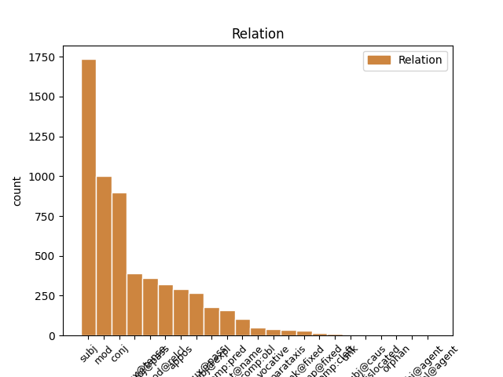
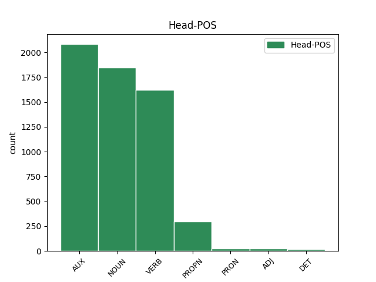
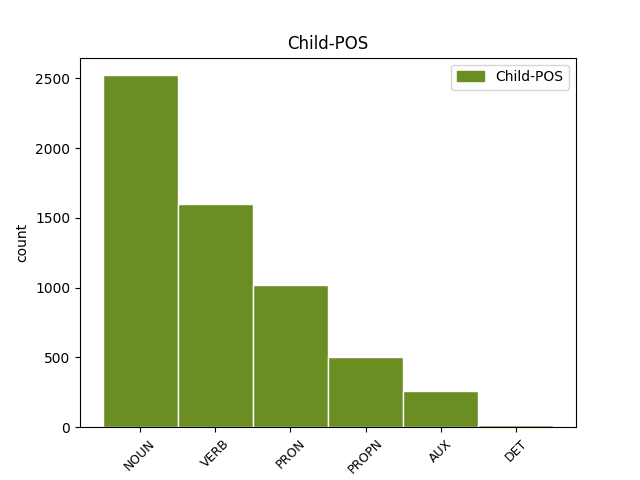

Distribution of features within this leaf



Agreement Rules sorted by frequency.
- When the dependent token is the subject(subj) of the head token, and the dependent token is NOUN.
1 L' _ _ _ _ 0 _ _ _
2 aventure aventure NOUN _ Gender=Fem|Number=Sing 5 subj _ _
3 coloniale _ _ _ _ 0 _ _ _
4 n' _ _ _ _ 0 _ _ _
5 a avoir AUX _ Mood=Ind|Number=Sing|Person=3|Tense=Pres|VerbForm=Fin 0 _ _ _
6 été _ _ _ _ 0 _ _ _
7 profitable _ _ _ _ 0 _ _ _
8 que _ _ _ _ 0 _ _ _
9 pour _ _ _ _ 0 _ _ _
10 quelques _ _ _ _ 0 _ _ _
11 grandes _ _ _ _ 0 _ _ _
12 compagnies _ _ _ _ 0 _ _ _
13 privées _ _ _ _ 0 _ _ _
14 , _ _ _ _ 0 _ _ _
15 comme _ _ _ _ 0 _ _ _
16 la _ _ _ _ 0 _ _ _
17 Banque _ _ _ _ 0 _ _ _
18 d' _ _ _ _ 0 _ _ _
19 Indochine _ _ _ _ 0 _ _ _
20 , _ _ _ _ 0 _ _ _
21 Descours _ _ _ _ 0 _ _ _
22 & _ _ _ _ 0 _ _ _
23 Cabaud _ _ _ _ 0 _ _ _
24 , _ _ _ _ 0 _ _ _
25 les _ _ _ _ 0 _ _ _
26 Brasseries _ _ _ _ 0 _ _ _
27 et _ _ _ _ 0 _ _ _
28 glacières _ _ _ _ 0 _ _ _
29 d' _ _ _ _ 0 _ _ _
30 Indochine _ _ _ _ 0 _ _ _
31 , _ _ _ _ 0 _ _ _
32 etc _ _ _ _ 0 _ _ _
33 . _ _ _ _ 0 _ _ _
1 Elles il PRON _ Gender=Fem|Number=Plur|Person=3 2 subj _ _
2 représentent représenter VERB _ Mood=Ind|Number=Plur|Person=3|Tense=Pres|VerbForm=Fin 0 _ _ _
3 , _ _ _ _ 0 _ _ _
4 en _ _ _ _ 0 _ _ _
5 date _ _ _ _ 0 _ _ _
6 respectivement _ _ _ _ 0 _ _ _
7 de _ _ _ _ 0 _ _ _
8 le _ _ _ _ 0 _ _ _
9 22 _ _ _ _ 0 _ _ _
10 juillet _ _ _ _ 0 _ _ _
11 et _ _ _ _ 0 _ _ _
12 de _ _ _ _ 0 _ _ _
13 le _ _ _ _ 0 _ _ _
14 5 _ _ _ _ 0 _ _ _
15 août _ _ _ _ 0 _ _ _
16 2006 _ _ _ _ 0 _ _ _
17 , _ _ _ _ 0 _ _ _
18 la _ _ _ _ 0 _ _ _
19 même _ _ _ _ 0 _ _ _
20 femme _ _ _ _ 0 _ _ _
21 ( _ _ _ _ 0 _ _ _
22 habillée _ _ _ _ 0 _ _ _
23 de _ _ _ _ 0 _ _ _
24 la _ _ _ _ 0 _ _ _
25 même _ _ _ _ 0 _ _ _
26 façon _ _ _ _ 0 _ _ _
27 et _ _ _ _ 0 _ _ _
28 reconnaissable _ _ _ _ 0 _ _ _
29 par _ _ _ _ 0 _ _ _
30 des _ _ _ _ 0 _ _ _
31 caractéristiques _ _ _ _ 0 _ _ _
32 physiques _ _ _ _ 0 _ _ _
33 sur _ _ _ _ 0 _ _ _
34 son _ _ _ _ 0 _ _ _
35 visage _ _ _ _ 0 _ _ _
36 ) _ _ _ _ 0 _ _ _
37 , _ _ _ _ 0 _ _ _
38 pleurant _ _ _ _ 0 _ _ _
39 la _ _ _ _ 0 _ _ _
40 destruction _ _ _ _ 0 _ _ _
41 de _ _ _ _ 0 _ _ _
42 sa _ _ _ _ 0 _ _ _
43 maison _ _ _ _ 0 _ _ _
44 [ _ _ _ _ 0 _ _ _
45 4 _ _ _ _ 0 _ _ _
46 . _ _ _ _ 0 _ _ _
1 L' _ _ _ _ 0 _ _ _
2 affaire _ _ _ _ 0 _ _ _
3 fut _ _ _ _ 0 _ _ _
4 mise _ _ _ _ 0 _ _ _
5 à _ _ _ _ 0 _ _ _
6 jour _ _ _ _ 0 _ _ _
7 en _ _ _ _ 0 _ _ _
8 1950 _ _ _ _ 0 _ _ _
9 , _ _ _ _ 0 _ _ _
10 mais _ _ _ _ 0 _ _ _
11 ne _ _ _ _ 0 _ _ _
12 suscita _ _ _ _ 0 _ _ _
13 qu' _ _ _ _ 0 _ _ _
14 un _ _ _ _ 0 _ _ _
15 intérêt _ _ _ _ 0 _ _ _
16 limité _ _ _ _ 0 _ _ _
17 chez _ _ _ _ 0 _ _ _
18 les _ _ _ _ 0 _ _ _
19 parlementaires _ _ _ _ 0 _ _ _
20 , _ _ _ _ 0 _ _ _
21 jusqu' _ _ _ _ 0 _ _ _
22 en _ _ _ _ 0 _ _ _
23 1952-1953 _ _ _ _ 0 _ _ _
24 où _ _ _ _ 0 _ _ _
25 l' _ _ _ _ 0 _ _ _
26 on _ _ _ _ 0 _ _ _
27 se _ _ _ _ 0 _ _ _
28 rendit _ _ _ _ 0 _ _ _
29 compte _ _ _ _ 0 _ _ _
30 que _ _ _ _ 0 _ _ _
31 le _ _ _ _ 0 _ _ _
32 Viet _ _ _ _ 0 _ _ _
33 Minh _ _ _ _ 0 _ _ _
34 en _ _ _ _ 0 _ _ _
35 profitait _ _ _ _ 0 _ _ _
36 également _ _ _ _ 0 _ _ _
37 , _ _ _ _ 0 _ _ _
38 et _ _ _ _ 0 _ _ _
39 qu' _ _ _ _ 0 _ _ _
40 une _ _ _ _ 0 _ _ _
41 partie _ _ _ _ 0 _ _ _
42 de _ _ _ _ 0 _ _ _
43 les _ _ _ _ 0 _ _ _
44 armes _ _ _ _ 0 _ _ _
45 tournées _ _ _ _ 0 _ _ _
46 contre _ _ _ _ 0 _ _ _
47 les _ _ _ _ 0 _ _ _
48 soldats _ _ _ _ 0 _ _ _
49 français _ _ _ _ 0 _ _ _
50 ( _ _ _ _ 0 _ _ _
51 y _ _ _ _ 0 _ _ _
52 compris _ _ _ _ 0 _ _ _
53 tiralleurs _ _ _ _ 0 _ _ _
54 sénégalais _ _ _ _ 0 _ _ _
55 et _ _ _ _ 0 _ _ _
56 marocains _ _ _ _ 0 _ _ _
57 ) _ _ _ _ 0 _ _ _
58 avaient _ _ _ _ 0 _ _ _
59 donc _ _ _ _ 0 _ _ _
60 été _ _ _ _ 0 _ _ _
61 acquises _ _ _ _ 0 _ _ _
62 grâce _ _ _ _ 0 _ _ _
63 à _ _ _ _ 0 _ _ _
64 ce _ _ _ _ 0 _ _ _
65 trafic trafic NOUN _ Gender=Masc|Number=Sing 0 _ _ _
66 entretenu entretenir VERB _ Gender=Masc|Number=Sing|Tense=Past|VerbForm=Part 65 mod _ _
67 par _ _ _ _ 0 _ _ _
68 l' _ _ _ _ 0 _ _ _
69 avidité _ _ _ _ 0 _ _ _
70 de _ _ _ _ 0 _ _ _
71 certains _ _ _ _ 0 _ _ _
72 . _ _ _ _ 0 _ _ _
1 L' _ _ _ _ 0 _ _ _
2 aventure _ _ _ _ 0 _ _ _
3 coloniale _ _ _ _ 0 _ _ _
4 n' _ _ _ _ 0 _ _ _
5 a _ _ _ _ 0 _ _ _
6 été _ _ _ _ 0 _ _ _
7 profitable _ _ _ _ 0 _ _ _
8 que _ _ _ _ 0 _ _ _
9 pour _ _ _ _ 0 _ _ _
10 quelques _ _ _ _ 0 _ _ _
11 grandes _ _ _ _ 0 _ _ _
12 compagnies _ _ _ _ 0 _ _ _
13 privées _ _ _ _ 0 _ _ _
14 , _ _ _ _ 0 _ _ _
15 comme _ _ _ _ 0 _ _ _
16 la _ _ _ _ 0 _ _ _
17 Banque _ _ _ _ 0 _ _ _
18 d' _ _ _ _ 0 _ _ _
19 Indochine _ _ _ _ 0 _ _ _
20 , _ _ _ _ 0 _ _ _
21 Descours _ _ _ _ 0 _ _ _
22 & _ _ _ _ 0 _ _ _
23 Cabaud _ _ _ _ 0 _ _ _
24 , _ _ _ _ 0 _ _ _
25 les _ _ _ _ 0 _ _ _
26 Brasseries brasserie NOUN _ Gender=Fem|Number=Plur 0 _ _ _
27 et _ _ _ _ 0 _ _ _
28 glacières glacière NOUN _ Gender=Fem|Number=Plur 26 conj _ _
29 d' _ _ _ _ 0 _ _ _
30 Indochine _ _ _ _ 0 _ _ _
31 , _ _ _ _ 0 _ _ _
32 etc _ _ _ _ 0 _ _ _
33 . _ _ _ _ 0 _ _ _
1 En _ _ _ _ 0 _ _ _
2 juillet _ _ _ _ 0 _ _ _
3 de _ _ _ _ 0 _ _ _
4 l' _ _ _ _ 0 _ _ _
5 année _ _ _ _ 0 _ _ _
6 suivante _ _ _ _ 0 _ _ _
7 , _ _ _ _ 0 _ _ _
8 les _ _ _ _ 0 _ _ _
9 accords _ _ _ _ 0 _ _ _
10 de _ _ _ _ 0 _ _ _
11 Genève _ _ _ _ 0 _ _ _
12 étaient _ _ _ _ 0 _ _ _
13 signés _ _ _ _ 0 _ _ _
14 et _ _ _ _ 0 _ _ _
15 l' _ _ _ _ 0 _ _ _
16 Indochine _ _ _ _ 0 _ _ _
17 française _ _ _ _ 0 _ _ _
18 avait avoir AUX _ Mood=Ind|Number=Sing|Person=3|Tense=Imp|VerbForm=Fin 0 _ _ _
19 vécu vivre VERB _ Gender=Masc|Number=Sing|Tense=Past|VerbForm=Part 18 comp:aux@tense _ SpaceAfter=No
20 . _ _ _ _ 0 _ _ _
1 - _ _ _ _ 0 _ _ _
2 dernier _ _ _ _ 0 _ _ _
3 résumé résumé NOUN _ Gender=Masc|Number=Sing 0 _ _ _
4 : _ _ _ _ 0 _ _ _
5 l' _ _ _ _ 0 _ _ _
6 " _ _ _ _ 0 _ _ _
7 Affaire affaire NOUN _ Gender=Fem|Number=Sing 3 mod _ _
8 de _ _ _ _ 0 _ _ _
9 les _ _ _ _ 0 _ _ _
10 piastres _ _ _ _ 0 _ _ _
11 " _ _ _ _ 0 _ _ _
1 Le _ _ _ _ 0 _ _ _
2 " _ _ _ _ 0 _ _ _
3 scandale _ _ _ _ 0 _ _ _
4 de _ _ _ _ 0 _ _ _
5 les _ _ _ _ 0 _ _ _
6 piastres _ _ _ _ 0 _ _ _
7 " _ _ _ _ 0 _ _ _
8 fut être AUX _ Mood=Ind|Number=Sing|Person=3|Tense=Past|VerbForm=Fin 0 _ _ _
9 ramené ramener VERB _ Gender=Masc|Number=Sing|Tense=Past|VerbForm=Part|Voice=Pass 8 comp:aux@pass _ _
10 à _ _ _ _ 0 _ _ _
11 l' _ _ _ _ 0 _ _ _
12 état _ _ _ _ 0 _ _ _
13 de _ _ _ _ 0 _ _ _
14 détail _ _ _ _ 0 _ _ _
15 exotique _ _ _ _ 0 _ _ _
16 et _ _ _ _ 0 _ _ _
17 insignifiant _ _ _ _ 0 _ _ _
18 , _ _ _ _ 0 _ _ _
19 indigne _ _ _ _ 0 _ _ _
20 d' _ _ _ _ 0 _ _ _
21 être _ _ _ _ 0 _ _ _
22 mentionné _ _ _ _ 0 _ _ _
23 dans _ _ _ _ 0 _ _ _
24 les _ _ _ _ 0 _ _ _
25 manuels _ _ _ _ 0 _ _ _
26 d' _ _ _ _ 0 _ _ _
27 histoire _ _ _ _ 0 _ _ _
28 . _ _ _ _ 0 _ _ _
1 Le _ _ _ _ 0 _ _ _
2 " _ _ _ _ 0 _ _ _
3 scandale scandale NOUN _ Gender=Masc|Number=Sing 8 subj@pass _ _
4 de _ _ _ _ 0 _ _ _
5 les _ _ _ _ 0 _ _ _
6 piastres _ _ _ _ 0 _ _ _
7 " _ _ _ _ 0 _ _ _
8 fut être AUX _ Mood=Ind|Number=Sing|Person=3|Tense=Past|VerbForm=Fin 0 _ _ _
9 ramené _ _ _ _ 0 _ _ _
10 à _ _ _ _ 0 _ _ _
11 l' _ _ _ _ 0 _ _ _
12 état _ _ _ _ 0 _ _ _
13 de _ _ _ _ 0 _ _ _
14 détail _ _ _ _ 0 _ _ _
15 exotique _ _ _ _ 0 _ _ _
16 et _ _ _ _ 0 _ _ _
17 insignifiant _ _ _ _ 0 _ _ _
18 , _ _ _ _ 0 _ _ _
19 indigne _ _ _ _ 0 _ _ _
20 d' _ _ _ _ 0 _ _ _
21 être _ _ _ _ 0 _ _ _
22 mentionné _ _ _ _ 0 _ _ _
23 dans _ _ _ _ 0 _ _ _
24 les _ _ _ _ 0 _ _ _
25 manuels _ _ _ _ 0 _ _ _
26 d' _ _ _ _ 0 _ _ _
27 histoire _ _ _ _ 0 _ _ _
28 . _ _ _ _ 0 _ _ _
1 En _ _ _ _ 0 _ _ _
2 fait _ _ _ _ 0 _ _ _
3 , _ _ _ _ 0 _ _ _
4 il il PRON _ Gender=Masc|Number=Sing|Person=3 5 subj@expl _ _
5 semble sembler VERB _ Mood=Ind|Number=Sing|Person=3|Tense=Pres|VerbForm=Fin 0 _ _ _
6 que _ _ _ _ 0 _ _ _
7 la _ _ _ _ 0 _ _ _
8 France _ _ _ _ 0 _ _ _
9 ait _ _ _ _ 0 _ _ _
10 cherché _ _ _ _ 0 _ _ _
11 à _ _ _ _ 0 _ _ _
12 sauver _ _ _ _ 0 _ _ _
13 à _ _ _ _ 0 _ _ _
14 le _ _ _ _ 0 _ _ _
15 moins _ _ _ _ 0 _ _ _
16 l' _ _ _ _ 0 _ _ _
17 Institut _ _ _ _ 0 _ _ _
18 d' _ _ _ _ 0 _ _ _
19 émission _ _ _ _ 0 _ _ _
20 , _ _ _ _ 0 _ _ _
21 pièce _ _ _ _ 0 _ _ _
22 maîtresse _ _ _ _ 0 _ _ _
23 de _ _ _ _ 0 _ _ _
24 sa _ _ _ _ 0 _ _ _
25 diplomatie _ _ _ _ 0 _ _ _
26 financière _ _ _ _ 0 _ _ _
27 en _ _ _ _ 0 _ _ _
28 Indochine _ _ _ _ 0 _ _ _
29 . _ _ _ _ 0 _ _ _
1 Toujours _ _ _ _ 0 _ _ _
2 selon _ _ _ _ 0 _ _ _
3 J. _ _ _ _ 0 _ _ _
4 Despuech _ _ _ _ 0 _ _ _
5 , _ _ _ _ 0 _ _ _
6 l' _ _ _ _ 0 _ _ _
7 empereur _ _ _ _ 0 _ _ _
8 Bao _ _ _ _ 0 _ _ _
9 Dai _ _ _ _ 0 _ _ _
10 , _ _ _ _ 0 _ _ _
11 l' _ _ _ _ 0 _ _ _
12 ancien _ _ _ _ 0 _ _ _
13 haut _ _ _ _ 0 _ _ _
14 commissaire _ _ _ _ 0 _ _ _
15 Emile _ _ _ _ 0 _ _ _
16 Bollaert _ _ _ _ 0 _ _ _
17 , _ _ _ _ 0 _ _ _
18 les _ _ _ _ 0 _ _ _
19 généraux _ _ _ _ 0 _ _ _
20 Charles _ _ _ _ 0 _ _ _
21 Mast _ _ _ _ 0 _ _ _
22 et _ _ _ _ 0 _ _ _
23 Revers _ _ _ _ 0 _ _ _
24 , _ _ _ _ 0 _ _ _
25 l' _ _ _ _ 0 _ _ _
26 ancien _ _ _ _ 0 _ _ _
27 ministre _ _ _ _ 0 _ _ _
28 Paul _ _ _ _ 0 _ _ _
29 Giaccobi _ _ _ _ 0 _ _ _
30 auraient _ _ _ _ 0 _ _ _
31 été _ _ _ _ 0 _ _ _
32 à _ _ _ _ 0 _ _ _
33 le _ _ _ _ 0 _ _ _
34 nombre _ _ _ _ 0 _ _ _
35 de _ _ _ _ 0 _ _ _
36 les _ _ _ _ 0 _ _ _
37 personnages personnage NOUN _ Gender=Masc|Number=Plur 0 _ _ _
38 importants _ _ _ _ 0 _ _ _
39 qui _ _ _ _ 0 _ _ _
40 s' _ _ _ _ 0 _ _ _
41 y _ _ _ _ 0 _ _ _
42 adonnèrent adonner VERB _ Mood=Ind|Number=Plur|Person=3|Tense=Past|VerbForm=Fin 37 mod@relcl _ SpaceAfter=No
43 . _ _ _ _ 0 _ _ _
1 Les _ _ _ _ 0 _ _ _
2 banquiers _ _ _ _ 0 _ _ _
3 n' _ _ _ _ 0 _ _ _
4 ont _ _ _ _ 0 _ _ _
5 jamais _ _ _ _ 0 _ _ _
6 été _ _ _ _ 0 _ _ _
7 arrêtés arrêter VERB _ Gender=Masc|Number=Plur|Tense=Past|VerbForm=Part|Voice=Pass 0 _ _ _
8 ni _ _ _ _ 0 _ _ _
9 jugés juger VERB _ Gender=Masc|Number=Plur|Tense=Past|VerbForm=Part 7 conj _ SpaceAfter=No
10 , _ _ _ _ 0 _ _ _
11 à _ _ _ _ 0 _ _ _
12 l' _ _ _ _ 0 _ _ _
13 exception _ _ _ _ 0 _ _ _
14 de _ _ _ _ 0 _ _ _
15 la _ _ _ _ 0 _ _ _
16 Chartered _ _ _ _ 0 _ _ _
17 Bank _ _ _ _ 0 _ _ _
18 qui _ _ _ _ 0 _ _ _
19 fut _ _ _ _ 0 _ _ _
20 inculpée _ _ _ _ 0 _ _ _
21 pour _ _ _ _ 0 _ _ _
22 des _ _ _ _ 0 _ _ _
23 pratiques _ _ _ _ 0 _ _ _
24 nettement _ _ _ _ 0 _ _ _
25 frauduleuses _ _ _ _ 0 _ _ _
26 . _ _ _ _ 0 _ _ _
1 En _ _ _ _ 0 _ _ _
2 fait _ _ _ _ 0 _ _ _
3 , _ _ _ _ 0 _ _ _
4 il _ _ _ _ 0 _ _ _
5 semble _ _ _ _ 0 _ _ _
6 que _ _ _ _ 0 _ _ _
7 la _ _ _ _ 0 _ _ _
8 France _ _ _ _ 0 _ _ _
9 ait _ _ _ _ 0 _ _ _
10 cherché _ _ _ _ 0 _ _ _
11 à _ _ _ _ 0 _ _ _
12 sauver _ _ _ _ 0 _ _ _
13 à _ _ _ _ 0 _ _ _
14 le _ _ _ _ 0 _ _ _
15 moins _ _ _ _ 0 _ _ _
16 l' _ _ _ _ 0 _ _ _
17 Institut Institut PROPN _ Number=Sing 0 _ _ _
18 d' _ _ _ _ 0 _ _ _
19 émission _ _ _ _ 0 _ _ _
20 , _ _ _ _ 0 _ _ _
21 pièce pièce NOUN _ Gender=Fem|Number=Sing 17 appos _ _
22 maîtresse _ _ _ _ 0 _ _ _
23 de _ _ _ _ 0 _ _ _
24 sa _ _ _ _ 0 _ _ _
25 diplomatie _ _ _ _ 0 _ _ _
26 financière _ _ _ _ 0 _ _ _
27 en _ _ _ _ 0 _ _ _
28 Indochine _ _ _ _ 0 _ _ _
29 . _ _ _ _ 0 _ _ _
1 François _ _ _ _ 0 _ _ _
2 Mitterrand _ _ _ _ 0 _ _ _
3 était être AUX _ Mood=Ind|Number=Sing|Person=3|Tense=Imp|VerbForm=Fin 0 _ _ _
4 alors _ _ _ _ 0 _ _ _
5 ministre ministre NOUN _ Gender=Masc|Number=Sing 3 comp:pred _ _
6 de _ _ _ _ 0 _ _ _
7 les _ _ _ _ 0 _ _ _
8 Colonies _ _ _ _ 0 _ _ _
9 ( _ _ _ _ 0 _ _ _
10 à _ _ _ _ 0 _ _ _
11 partir _ _ _ _ 0 _ _ _
12 de _ _ _ _ 0 _ _ _
13 1950 _ _ _ _ 0 _ _ _
14 ) _ _ _ _ 0 _ _ _
15 et _ _ _ _ 0 _ _ _
16 René _ _ _ _ 0 _ _ _
17 Bousquet _ _ _ _ 0 _ _ _
18 directeur _ _ _ _ 0 _ _ _
19 de _ _ _ _ 0 _ _ _
20 la _ _ _ _ 0 _ _ _
21 Banque _ _ _ _ 0 _ _ _
22 d' _ _ _ _ 0 _ _ _
23 Indochine _ _ _ _ 0 _ _ _
24 . _ _ _ _ 0 _ _ _
1 En _ _ _ _ 0 _ _ _
2 juillet _ _ _ _ 0 _ _ _
3 de _ _ _ _ 0 _ _ _
4 l' _ _ _ _ 0 _ _ _
5 année _ _ _ _ 0 _ _ _
6 suivante _ _ _ _ 0 _ _ _
7 , _ _ _ _ 0 _ _ _
8 les _ _ _ _ 0 _ _ _
9 accords _ _ _ _ 0 _ _ _
10 de _ _ _ _ 0 _ _ _
11 Genève _ _ _ _ 0 _ _ _
12 étaient _ _ _ _ 0 _ _ _
13 signés _ _ _ _ 0 _ _ _
14 et _ _ _ _ 0 _ _ _
15 l' _ _ _ _ 0 _ _ _
16 Indochine Indochine PROPN _ Number=Sing 18 subj _ _
17 française _ _ _ _ 0 _ _ _
18 avait avoir AUX _ Mood=Ind|Number=Sing|Person=3|Tense=Imp|VerbForm=Fin 0 _ _ _
19 vécu _ _ _ _ 0 _ _ _
20 . _ _ _ _ 0 _ _ _
1 Il _ _ _ _ 0 _ _ _
2 fait _ _ _ _ 0 _ _ _
3 aujourd'hui _ _ _ _ 0 _ _ _
4 l' _ _ _ _ 0 _ _ _
5 objet _ _ _ _ 0 _ _ _
6 d' _ _ _ _ 0 _ _ _
7 un _ _ _ _ 0 _ _ _
8 mandat _ _ _ _ 0 _ _ _
9 d' _ _ _ _ 0 _ _ _
10 arrêt _ _ _ _ 0 _ _ _
11 international _ _ _ _ 0 _ _ _
12 , _ _ _ _ 0 _ _ _
13 et _ _ _ _ 0 _ _ _
14 dans _ _ _ _ 0 _ _ _
15 un _ _ _ _ 0 _ _ _
16 entretien _ _ _ _ 0 _ _ _
17 accordé _ _ _ _ 0 _ _ _
18 à _ _ _ _ 0 _ _ _
19 le _ _ _ _ 0 _ _ _
20 Monde _ _ _ _ 0 _ _ _
21 , _ _ _ _ 0 _ _ _
22 il _ _ _ _ 0 _ _ _
23 confirme _ _ _ _ 0 _ _ _
24 la _ _ _ _ 0 _ _ _
25 position position NOUN _ Gender=Fem|Number=Sing 0 _ _ _
26 " _ _ _ _ 0 _ _ _
27 officielle _ _ _ _ 0 _ _ _
28 " _ _ _ _ 0 _ _ _
29 selon _ _ _ _ 0 _ _ _
30 laquelle _ _ _ _ 0 _ _ _
31 il _ _ _ _ 0 _ _ _
32 n' _ _ _ _ 0 _ _ _
33 y _ _ _ _ 0 _ _ _
34 aurait avoir AUX _ Mood=Cnd|Number=Sing|Person=3|Tense=Pres|VerbForm=Fin 25 mod@relcl _ _
35 pas _ _ _ _ 0 _ _ _
36 eu _ _ _ _ 0 _ _ _
37 de _ _ _ _ 0 _ _ _
38 versement _ _ _ _ 0 _ _ _
39 de _ _ _ _ 0 _ _ _
40 rançon _ _ _ _ 0 _ _ _
41 . _ _ _ _ 0 _ _ _
1 - _ _ _ _ 0 _ _ _
2 Paul Paul PROPN _ Gender=Masc|Number=Sing 0 _ _ _
3 Mus Mus PROPN _ Gender=Masc|Number=Sing 2 flat@name _ SpaceAfter=No
4 , _ _ _ _ 0 _ _ _
5 Viêtnam _ _ _ _ 0 _ _ _
6 : _ _ _ _ 0 _ _ _
7 Sociologie _ _ _ _ 0 _ _ _
8 d' _ _ _ _ 0 _ _ _
9 une _ _ _ _ 0 _ _ _
10 guerre _ _ _ _ 0 _ _ _
11 , _ _ _ _ 0 _ _ _
12 Seuil _ _ _ _ 0 _ _ _
13 , _ _ _ _ 0 _ _ _
14 Paris _ _ _ _ 0 _ _ _
15 , _ _ _ _ 0 _ _ _
16 1952 _ _ _ _ 0 _ _ _
17 . _ _ _ _ 0 _ _ _
1 Toujours _ _ _ _ 0 _ _ _
2 selon _ _ _ _ 0 _ _ _
3 J. _ _ _ _ 0 _ _ _
4 Despuech _ _ _ _ 0 _ _ _
5 , _ _ _ _ 0 _ _ _
6 l' _ _ _ _ 0 _ _ _
7 empereur _ _ _ _ 0 _ _ _
8 Bao _ _ _ _ 0 _ _ _
9 Dai _ _ _ _ 0 _ _ _
10 , _ _ _ _ 0 _ _ _
11 l' _ _ _ _ 0 _ _ _
12 ancien _ _ _ _ 0 _ _ _
13 haut _ _ _ _ 0 _ _ _
14 commissaire _ _ _ _ 0 _ _ _
15 Emile _ _ _ _ 0 _ _ _
16 Bollaert _ _ _ _ 0 _ _ _
17 , _ _ _ _ 0 _ _ _
18 les _ _ _ _ 0 _ _ _
19 généraux _ _ _ _ 0 _ _ _
20 Charles _ _ _ _ 0 _ _ _
21 Mast _ _ _ _ 0 _ _ _
22 et _ _ _ _ 0 _ _ _
23 Revers _ _ _ _ 0 _ _ _
24 , _ _ _ _ 0 _ _ _
25 l' _ _ _ _ 0 _ _ _
26 ancien _ _ _ _ 0 _ _ _
27 ministre ministre NOUN _ Gender=Masc|Number=Sing 0 _ _ _
28 Paul Paul PROPN _ Gender=Masc|Number=Sing 27 appos _ _
29 Giaccobi _ _ _ _ 0 _ _ _
30 auraient _ _ _ _ 0 _ _ _
31 été _ _ _ _ 0 _ _ _
32 à _ _ _ _ 0 _ _ _
33 le _ _ _ _ 0 _ _ _
34 nombre _ _ _ _ 0 _ _ _
35 de _ _ _ _ 0 _ _ _
36 les _ _ _ _ 0 _ _ _
37 personnages _ _ _ _ 0 _ _ _
38 importants _ _ _ _ 0 _ _ _
39 qui _ _ _ _ 0 _ _ _
40 s' _ _ _ _ 0 _ _ _
41 y _ _ _ _ 0 _ _ _
42 adonnèrent _ _ _ _ 0 _ _ _
43 . _ _ _ _ 0 _ _ _
1 Après _ _ _ _ 0 _ _ _
2 la _ _ _ _ 0 _ _ _
3 mise _ _ _ _ 0 _ _ _
4 en _ _ _ _ 0 _ _ _
5 évidence _ _ _ _ 0 _ _ _
6 de _ _ _ _ 0 _ _ _
7 certaines _ _ _ _ 0 _ _ _
8 de _ _ _ _ 0 _ _ _
9 ces _ _ _ _ 0 _ _ _
10 " _ _ _ _ 0 _ _ _
11 anomalies _ _ _ _ 0 _ _ _
12 " _ _ _ _ 0 _ _ _
13 par _ _ _ _ 0 _ _ _
14 les _ _ _ _ 0 _ _ _
15 blogs _ _ _ _ 0 _ _ _
16 américains _ _ _ _ 0 _ _ _
17 Little _ _ _ _ 0 _ _ _
18 Green _ _ _ _ 0 _ _ _
19 Footballs _ _ _ _ 0 _ _ _
20 et _ _ _ _ 0 _ _ _
21 My _ _ _ _ 0 _ _ _
22 Pet _ _ _ _ 0 _ _ _
23 Jawa _ _ _ _ 0 _ _ _
24 , _ _ _ _ 0 _ _ _
25 l' _ _ _ _ 0 _ _ _
26 agence _ _ _ _ 0 _ _ _
27 Reuters _ _ _ _ 0 _ _ _
28 a avoir AUX _ Mood=Ind|Number=Sing|Person=3|Tense=Pres|VerbForm=Fin 0 _ _ _
29 retiré _ _ _ _ 0 _ _ _
30 les _ _ _ _ 0 _ _ _
31 clichés _ _ _ _ 0 _ _ _
32 et _ _ _ _ 0 _ _ _
33 a avoir AUX _ Mood=Ind|Number=Sing|Person=3|Tense=Pres|VerbForm=Fin 28 conj _ _
34 admis _ _ _ _ 0 _ _ _
35 que _ _ _ _ 0 _ _ _
36 des _ _ _ _ 0 _ _ _
37 photos _ _ _ _ 0 _ _ _
38 avaient _ _ _ _ 0 _ _ _
39 subi _ _ _ _ 0 _ _ _
40 des _ _ _ _ 0 _ _ _
41 modifications _ _ _ _ 0 _ _ _
42 [ _ _ _ _ 0 _ _ _
43 5 _ _ _ _ 0 _ _ _
44 ] _ _ _ _ 0 _ _ _
45 [ _ _ _ _ 0 _ _ _
46 6 _ _ _ _ 0 _ _ _
47 ] _ _ _ _ 0 _ _ _
48 . _ _ _ _ 0 _ _ _
1 René _ _ _ _ 0 _ _ _
2 Mayer _ _ _ _ 0 _ _ _
3 , _ _ _ _ 0 _ _ _
4 Président _ _ _ _ 0 _ _ _
5 de _ _ _ _ 0 _ _ _
6 le _ _ _ _ 0 _ _ _
7 Conseil _ _ _ _ 0 _ _ _
8 , _ _ _ _ 0 _ _ _
9 y _ _ _ _ 0 _ _ _
10 mit _ _ _ _ 0 _ _ _
11 fin _ _ _ _ 0 _ _ _
12 en _ _ _ _ 0 _ _ _
13 1953 _ _ _ _ 0 _ _ _
14 en _ _ _ _ 0 _ _ _
15 ramenant _ _ _ _ 0 _ _ _
16 le _ _ _ _ 0 _ _ _
17 taux _ _ _ _ 0 _ _ _
18 de _ _ _ _ 0 _ _ _
19 les _ _ _ _ 0 _ _ _
20 piastres _ _ _ _ 0 _ _ _
21 à _ _ _ _ 0 _ _ _
22 10 _ _ _ _ 0 _ _ _
23 francs _ _ _ _ 0 _ _ _
24 , _ _ _ _ 0 _ _ _
25 un _ _ _ _ 0 _ _ _
26 cours _ _ _ _ 0 _ _ _
27 plus _ _ _ _ 0 _ _ _
28 réaliste _ _ _ _ 0 _ _ _
29 , _ _ _ _ 0 _ _ _
30 mais _ _ _ _ 0 _ _ _
31 ce _ _ _ _ 0 _ _ _
32 en _ _ _ _ 0 _ _ _
33 violation _ _ _ _ 0 _ _ _
34 de _ _ _ _ 0 _ _ _
35 les _ _ _ _ 0 _ _ _
36 accords _ _ _ _ 0 _ _ _
37 de _ _ _ _ 0 _ _ _
38 le _ _ _ _ 0 _ _ _
39 8 _ _ _ _ 0 _ _ _
40 Mars _ _ _ _ 0 _ _ _
41 1949 _ _ _ _ 0 _ _ _
42 et _ _ _ _ 0 _ _ _
43 de _ _ _ _ 0 _ _ _
44 les _ _ _ _ 0 _ _ _
45 accords _ _ _ _ 0 _ _ _
46 de _ _ _ _ 0 _ _ _
47 Pau _ _ _ _ 0 _ _ _
48 de _ _ _ _ 0 _ _ _
49 1950 _ _ _ _ 0 _ _ _
50 ; _ _ _ _ 0 _ _ _
51 les _ _ _ _ 0 _ _ _
52 États _ _ _ _ 0 _ _ _
53 associés _ _ _ _ 0 _ _ _
54 de _ _ _ _ 0 _ _ _
55 le _ _ _ _ 0 _ _ _
56 Cambodge Cambodge PROPN _ Gender=Masc|Number=Sing 0 _ _ _
57 , _ _ _ _ 0 _ _ _
58 Laos Laos PROPN _ Gender=Masc|Number=Sing 56 conj _ _
59 et _ _ _ _ 0 _ _ _
60 Viêtnam _ _ _ _ 0 _ _ _
61 ne _ _ _ _ 0 _ _ _
62 furent _ _ _ _ 0 _ _ _
63 pas _ _ _ _ 0 _ _ _
64 consultés _ _ _ _ 0 _ _ _
65 . _ _ _ _ 0 _ _ _
1 Puis _ _ _ _ 0 _ _ _
2 , _ _ _ _ 0 _ _ _
3 les _ _ _ _ 0 _ _ _
4 sommes _ _ _ _ 0 _ _ _
5 étaient _ _ _ _ 0 _ _ _
6 retirées _ _ _ _ 0 _ _ _
7 par _ _ _ _ 0 _ _ _
8 des _ _ _ _ 0 _ _ _
9 proches _ _ _ _ 0 _ _ _
10 de _ _ _ _ 0 _ _ _
11 Safa _ _ _ _ 0 _ _ _
12 et _ _ _ _ 0 _ _ _
13 apportées _ _ _ _ 0 _ _ _
14 à _ _ _ _ 0 _ _ _
15 l' _ _ _ _ 0 _ _ _
16 association _ _ _ _ 0 _ _ _
17 France _ _ _ _ 0 _ _ _
18 Orient _ _ _ _ 0 _ _ _
19 , _ _ _ _ 0 _ _ _
20 où _ _ _ _ 0 _ _ _
21 elles il PRON _ Gender=Fem|Number=Plur|Person=3 22 subj@pass _ _
22 étaient être AUX _ Mood=Ind|Number=Plur|Person=3|Tense=Imp|VerbForm=Fin 0 _ _ _
23 réceptionnées _ _ _ _ 0 _ _ _
24 par _ _ _ _ 0 _ _ _
25 J.-C. _ _ _ _ 0 _ _ _
26 Marchianni _ _ _ _ 0 _ _ _
27 ou _ _ _ _ 0 _ _ _
28 sa _ _ _ _ 0 _ _ _
29 secrétaire _ _ _ _ 0 _ _ _
30 . _ _ _ _ 0 _ _ _
1 - _ _ _ _ 0 _ _ _
2 Paul Paul PROPN _ Gender=Masc|Number=Sing 0 _ _ _
3 Mus _ _ _ _ 0 _ _ _
4 , _ _ _ _ 0 _ _ _
5 Viêtnam _ _ _ _ 0 _ _ _
6 : _ _ _ _ 0 _ _ _
7 Sociologie _ _ _ _ 0 _ _ _
8 d' _ _ _ _ 0 _ _ _
9 une _ _ _ _ 0 _ _ _
10 guerre _ _ _ _ 0 _ _ _
11 , _ _ _ _ 0 _ _ _
12 Seuil _ _ _ _ 0 _ _ _
13 , _ _ _ _ 0 _ _ _
14 Paris Paris PROPN _ Gender=Masc|Number=Sing 2 mod _ SpaceAfter=No
15 , _ _ _ _ 0 _ _ _
16 1952 _ _ _ _ 0 _ _ _
17 . _ _ _ _ 0 _ _ _
1 " _ _ _ _ 0 _ _ _
2 Monsieur monsieur NOUN _ Gender=Masc|Number=Sing 15 vocative _ _
3 le _ _ _ _ 0 _ _ _
4 président _ _ _ _ 0 _ _ _
5 , _ _ _ _ 0 _ _ _
6 messieurs _ _ _ _ 0 _ _ _
7 les _ _ _ _ 0 _ _ _
8 membres _ _ _ _ 0 _ _ _
9 de _ _ _ _ 0 _ _ _
10 ce _ _ _ _ 0 _ _ _
11 comité _ _ _ _ 0 _ _ _
12 , _ _ _ _ 0 _ _ _
13 je _ _ _ _ 0 _ _ _
14 m' _ _ _ _ 0 _ _ _
15 appelle appeler VERB _ Mood=Ind|Number=Sing|Person=1|Tense=Pres|VerbForm=Fin 0 _ _ _
16 Nayirah _ _ _ _ 0 _ _ _
17 et _ _ _ _ 0 _ _ _
18 je _ _ _ _ 0 _ _ _
19 reviens _ _ _ _ 0 _ _ _
20 de _ _ _ _ 0 _ _ _
21 le _ _ _ _ 0 _ _ _
22 Koweit _ _ _ _ 0 _ _ _
23 . _ _ _ _ 0 _ _ _
1 La _ _ _ _ 0 _ _ _
2 Juve Juve PROPN _ Gender=Fem|Number=Sing 3 subj@pass _ _
3 est être AUX _ Mood=Ind|Number=Sing|Person=3|Tense=Pres|VerbForm=Fin 0 _ _ _
4 déchue _ _ _ _ 0 _ _ _
5 de _ _ _ _ 0 _ _ _
6 les _ _ _ _ 0 _ _ _
7 titres _ _ _ _ 0 _ _ _
8 acquis _ _ _ _ 0 _ _ _
9 dans _ _ _ _ 0 _ _ _
10 le _ _ _ _ 0 _ _ _
11 Calcio _ _ _ _ 0 _ _ _
12 lors _ _ _ _ 0 _ _ _
13 de _ _ _ _ 0 _ _ _
14 les _ _ _ _ 0 _ _ _
15 saisons _ _ _ _ 0 _ _ _
16 2004-2005 _ _ _ _ 0 _ _ _
17 et _ _ _ _ 0 _ _ _
18 2005-2006 _ _ _ _ 0 _ _ _
19 et _ _ _ _ 0 _ _ _
20 ne _ _ _ _ 0 _ _ _
21 pourra _ _ _ _ 0 _ _ _
22 prendre _ _ _ _ 0 _ _ _
23 part _ _ _ _ 0 _ _ _
24 à _ _ _ _ 0 _ _ _
25 l' _ _ _ _ 0 _ _ _
26 édition _ _ _ _ 0 _ _ _
27 2006-2007 _ _ _ _ 0 _ _ _
28 de _ _ _ _ 0 _ _ _
29 la _ _ _ _ 0 _ _ _
30 Ligue _ _ _ _ 0 _ _ _
31 de _ _ _ _ 0 _ _ _
32 les _ _ _ _ 0 _ _ _
33 champions _ _ _ _ 0 _ _ _
34 [ _ _ _ _ 0 _ _ _
35 3 _ _ _ _ 0 _ _ _
36 ] _ _ _ _ 0 _ _ _
37 . _ _ _ _ 0 _ _ _
1 En _ _ _ _ 0 _ _ _
2 ce _ _ _ _ 0 _ _ _
3 sens _ _ _ _ 0 _ _ _
4 , _ _ _ _ 0 _ _ _
5 les _ _ _ _ 0 _ _ _
6 prévenus _ _ _ _ 0 _ _ _
7 ont _ _ _ _ 0 _ _ _
8 été _ _ _ _ 0 _ _ _
9 condamnés _ _ _ _ 0 _ _ _
10 solidairement _ _ _ _ 0 _ _ _
11 à _ _ _ _ 0 _ _ _
12 payer _ _ _ _ 0 _ _ _
13 environ _ _ _ _ 0 _ _ _
14 17 600 _ _ _ _ 0 _ _ _
15 euros _ _ _ _ 0 _ _ _
16 de _ _ _ _ 0 _ _ _
17 dommages-intérêts _ _ _ _ 0 _ _ _
18 à _ _ _ _ 0 _ _ _
19 les _ _ _ _ 0 _ _ _
20 parties _ _ _ _ 0 _ _ _
21 civiles _ _ _ _ 0 _ _ _
22 pour _ _ _ _ 0 _ _ _
23 les _ _ _ _ 0 _ _ _
24 seuls _ _ _ _ 0 _ _ _
25 meubles _ _ _ _ 0 _ _ _
26 entreposés _ _ _ _ 0 _ _ _
27 dans _ _ _ _ 0 _ _ _
28 les _ _ _ _ 0 _ _ _
29 immeubles _ _ _ _ 0 _ _ _
30 qui _ _ _ _ 0 _ _ _
31 , _ _ _ _ 0 _ _ _
32 juridiquement _ _ _ _ 0 _ _ _
33 , _ _ _ _ 0 _ _ _
34 ne _ _ _ _ 0 _ _ _
35 leur lui PRON _ Number=Plur|Person=3 36 comp:obl _ _
36 appartenaient appartenir VERB _ Mood=Ind|Number=Plur|Person=3|Tense=Imp|VerbForm=Fin 0 _ _ _
37 pas _ _ _ _ 0 _ _ _
38 . _ _ _ _ 0 _ _ _
1 Rebondissement rebondissement NOUN _ Gender=Masc|Number=Sing 0 _ _ _
2 le _ _ _ _ 0 _ _ _
3 27 _ _ _ _ 0 _ _ _
4 octobre _ _ _ _ 0 _ _ _
5 2006 _ _ _ _ 0 _ _ _
6 par _ _ _ _ 0 _ _ _
7 suite _ _ _ _ 0 _ _ _
8 de _ _ _ _ 0 _ _ _
9 la _ _ _ _ 0 _ _ _
10 décision _ _ _ _ 0 _ _ _
11 de _ _ _ _ 0 _ _ _
12 la _ _ _ _ 0 _ _ _
13 Cour _ _ _ _ 0 _ _ _
14 arbitrale _ _ _ _ 0 _ _ _
15 de _ _ _ _ 0 _ _ _
16 le _ _ _ _ 0 _ _ _
17 comité _ _ _ _ 0 _ _ _
18 national _ _ _ _ 0 _ _ _
19 olympique _ _ _ _ 0 _ _ _
20 italien _ _ _ _ 0 _ _ _
21 : _ _ _ _ 0 _ _ _
22 les _ _ _ _ 0 _ _ _
23 clubs _ _ _ _ 0 _ _ _
24 condamnés _ _ _ _ 0 _ _ _
25 voient _ _ _ _ 0 _ _ _
26 leurs _ _ _ _ 0 _ _ _
27 pénalités _ _ _ _ 0 _ _ _
28 réduites _ _ _ _ 0 _ _ _
29 de _ _ _ _ 0 _ _ _
30 façon _ _ _ _ 0 _ _ _
31 importante _ _ _ _ 0 _ _ _
32 , _ _ _ _ 0 _ _ _
33 ainsi _ _ _ _ 0 _ _ _
34 la _ _ _ _ 0 _ _ _
35 Juventus _ _ _ _ 0 _ _ _
36 passe passer VERB _ Mood=Ind|Number=Sing|Person=3|Tense=Pres|VerbForm=Fin 1 parataxis _ _
37 de _ _ _ _ 0 _ _ _
38 17 _ _ _ _ 0 _ _ _
39 à _ _ _ _ 0 _ _ _
40 9 _ _ _ _ 0 _ _ _
41 points _ _ _ _ 0 _ _ _
42 de _ _ _ _ 0 _ _ _
43 retard _ _ _ _ 0 _ _ _
44 , _ _ _ _ 0 _ _ _
45 la _ _ _ _ 0 _ _ _
46 Fiorentina _ _ _ _ 0 _ _ _
47 de _ _ _ _ 0 _ _ _
48 19 _ _ _ _ 0 _ _ _
49 à _ _ _ _ 0 _ _ _
50 15 _ _ _ _ 0 _ _ _
51 et _ _ _ _ 0 _ _ _
52 la _ _ _ _ 0 _ _ _
53 Lazio _ _ _ _ 0 _ _ _
54 de _ _ _ _ 0 _ _ _
55 11 _ _ _ _ 0 _ _ _
56 à _ _ _ _ 0 _ _ _
57 3 _ _ _ _ 0 _ _ _
58 . _ _ _ _ 0 _ _ _
1 " _ _ _ _ 0 _ _ _
2 Monsieur _ _ _ _ 0 _ _ _
3 le _ _ _ _ 0 _ _ _
4 président _ _ _ _ 0 _ _ _
5 , _ _ _ _ 0 _ _ _
6 messieurs _ _ _ _ 0 _ _ _
7 les _ _ _ _ 0 _ _ _
8 membres _ _ _ _ 0 _ _ _
9 de _ _ _ _ 0 _ _ _
10 ce _ _ _ _ 0 _ _ _
11 comité _ _ _ _ 0 _ _ _
12 , _ _ _ _ 0 _ _ _
13 je _ _ _ _ 0 _ _ _
14 m' se PRON _ Number=Sing|Person=1|Reflex=Yes 15 comp@fixed _ SpaceAfter=No
15 appelle appeler VERB _ Mood=Ind|Number=Sing|Person=1|Tense=Pres|VerbForm=Fin 0 _ _ _
16 Nayirah _ _ _ _ 0 _ _ _
17 et _ _ _ _ 0 _ _ _
18 je _ _ _ _ 0 _ _ _
19 reviens _ _ _ _ 0 _ _ _
20 de _ _ _ _ 0 _ _ _
21 le _ _ _ _ 0 _ _ _
22 Koweit _ _ _ _ 0 _ _ _
23 . _ _ _ _ 0 _ _ _
1 Maître _ _ _ _ 0 _ _ _
2 Vergès _ _ _ _ 0 _ _ _
3 , _ _ _ _ 0 _ _ _
4 plaide plaider VERB _ Mood=Ind|Number=Sing|Person=3|Tense=Pres|VerbForm=Fin 0 _ _ _
5 : _ _ _ _ 0 _ _ _
6 l' _ _ _ _ 0 _ _ _
7 opération _ _ _ _ 0 _ _ _
8 paillote _ _ _ _ 0 _ _ _
9 n' _ _ _ _ 0 _ _ _
10 a avoir AUX _ Mood=Ind|Number=Sing|Person=3|Tense=Pres|VerbForm=Fin 4 mod _ _
11 été _ _ _ _ 0 _ _ _
12 qu' _ _ _ _ 0 _ _ _
13 une _ _ _ _ 0 _ _ _
14 " _ _ _ _ 0 _ _ _
15 manipulation _ _ _ _ 0 _ _ _
16 barbouzarde _ _ _ _ 0 _ _ _
17 " _ _ _ _ 0 _ _ _
18 visant _ _ _ _ 0 _ _ _
19 à _ _ _ _ 0 _ _ _
20 " _ _ _ _ 0 _ _ _
21 éliminer _ _ _ _ 0 _ _ _
22 un _ _ _ _ 0 _ _ _
23 préfet _ _ _ _ 0 _ _ _
24 de _ _ _ _ 0 _ _ _
25 Corse _ _ _ _ 0 _ _ _
26 qui _ _ _ _ 0 _ _ _
27 devenait _ _ _ _ 0 _ _ _
28 gênant _ _ _ _ 0 _ _ _
29 pour _ _ _ _ 0 _ _ _
30 un _ _ _ _ 0 _ _ _
31 gouvernement _ _ _ _ 0 _ _ _
32 qui _ _ _ _ 0 _ _ _
33 s' _ _ _ _ 0 _ _ _
34 apprêtait _ _ _ _ 0 _ _ _
35 à _ _ _ _ 0 _ _ _
36 dialoguer _ _ _ _ 0 _ _ _
37 avec _ _ _ _ 0 _ _ _
38 les _ _ _ _ 0 _ _ _
39 clandestins _ _ _ _ 0 _ _ _
40 " _ _ _ _ 0 _ _ _
41 . _ _ _ _ 0 _ _ _
1 L' _ _ _ _ 0 _ _ _
2 affaire _ _ _ _ 0 _ _ _
3 fut _ _ _ _ 0 _ _ _
4 mise _ _ _ _ 0 _ _ _
5 à _ _ _ _ 0 _ _ _
6 jour _ _ _ _ 0 _ _ _
7 en _ _ _ _ 0 _ _ _
8 1950 _ _ _ _ 0 _ _ _
9 , _ _ _ _ 0 _ _ _
10 mais _ _ _ _ 0 _ _ _
11 ne _ _ _ _ 0 _ _ _
12 suscita _ _ _ _ 0 _ _ _
13 qu' _ _ _ _ 0 _ _ _
14 un _ _ _ _ 0 _ _ _
15 intérêt _ _ _ _ 0 _ _ _
16 limité _ _ _ _ 0 _ _ _
17 chez _ _ _ _ 0 _ _ _
18 les _ _ _ _ 0 _ _ _
19 parlementaires _ _ _ _ 0 _ _ _
20 , _ _ _ _ 0 _ _ _
21 jusqu' _ _ _ _ 0 _ _ _
22 en _ _ _ _ 0 _ _ _
23 1952-1953 _ _ _ _ 0 _ _ _
24 où _ _ _ _ 0 _ _ _
25 l' le DET _ Definite=Def|Number=Sing|PronType=Art 0 _ _ _
26 on il PRON _ Number=Sing|Person=3 25 unk@fixed _ _
27 se _ _ _ _ 0 _ _ _
28 rendit _ _ _ _ 0 _ _ _
29 compte _ _ _ _ 0 _ _ _
30 que _ _ _ _ 0 _ _ _
31 le _ _ _ _ 0 _ _ _
32 Viet _ _ _ _ 0 _ _ _
33 Minh _ _ _ _ 0 _ _ _
34 en _ _ _ _ 0 _ _ _
35 profitait _ _ _ _ 0 _ _ _
36 également _ _ _ _ 0 _ _ _
37 , _ _ _ _ 0 _ _ _
38 et _ _ _ _ 0 _ _ _
39 qu' _ _ _ _ 0 _ _ _
40 une _ _ _ _ 0 _ _ _
41 partie _ _ _ _ 0 _ _ _
42 de _ _ _ _ 0 _ _ _
43 les _ _ _ _ 0 _ _ _
44 armes _ _ _ _ 0 _ _ _
45 tournées _ _ _ _ 0 _ _ _
46 contre _ _ _ _ 0 _ _ _
47 les _ _ _ _ 0 _ _ _
48 soldats _ _ _ _ 0 _ _ _
49 français _ _ _ _ 0 _ _ _
50 ( _ _ _ _ 0 _ _ _
51 y _ _ _ _ 0 _ _ _
52 compris _ _ _ _ 0 _ _ _
53 tiralleurs _ _ _ _ 0 _ _ _
54 sénégalais _ _ _ _ 0 _ _ _
55 et _ _ _ _ 0 _ _ _
56 marocains _ _ _ _ 0 _ _ _
57 ) _ _ _ _ 0 _ _ _
58 avaient _ _ _ _ 0 _ _ _
59 donc _ _ _ _ 0 _ _ _
60 été _ _ _ _ 0 _ _ _
61 acquises _ _ _ _ 0 _ _ _
62 grâce _ _ _ _ 0 _ _ _
63 à _ _ _ _ 0 _ _ _
64 ce _ _ _ _ 0 _ _ _
65 trafic _ _ _ _ 0 _ _ _
66 entretenu _ _ _ _ 0 _ _ _
67 par _ _ _ _ 0 _ _ _
68 l' _ _ _ _ 0 _ _ _
69 avidité _ _ _ _ 0 _ _ _
70 de _ _ _ _ 0 _ _ _
71 certains _ _ _ _ 0 _ _ _
72 . _ _ _ _ 0 _ _ _
1 C' ce PRON _ Number=Sing|Person=3 0 _ _ _
2 est être VERB _ Mood=Ind|Number=Sing|Person=3|Tense=Pres|VerbForm=Fin 1 unk@fixed _ _
3 pourquoi _ _ _ _ 0 _ _ _
4 nous _ _ _ _ 0 _ _ _
5 soutenons _ _ _ _ 0 _ _ _
6 le _ _ _ _ 0 _ _ _
7 rapport _ _ _ _ 0 _ _ _
8 Hatzidakis _ _ _ _ 0 _ _ _
9 , _ _ _ _ 0 _ _ _
10 et _ _ _ _ 0 _ _ _
11 je _ _ _ _ 0 _ _ _
12 tiens _ _ _ _ 0 _ _ _
13 à _ _ _ _ 0 _ _ _
14 féliciter _ _ _ _ 0 _ _ _
15 le _ _ _ _ 0 _ _ _
16 rapporteur _ _ _ _ 0 _ _ _
17 pour _ _ _ _ 0 _ _ _
18 sa _ _ _ _ 0 _ _ _
19 clarté _ _ _ _ 0 _ _ _
20 , _ _ _ _ 0 _ _ _
21 malgré _ _ _ _ 0 _ _ _
22 la _ _ _ _ 0 _ _ _
23 technicité _ _ _ _ 0 _ _ _
24 de _ _ _ _ 0 _ _ _
25 ce _ _ _ _ 0 _ _ _
26 dossier _ _ _ _ 0 _ _ _
27 . _ _ _ _ 0 _ _ _
1 - _ _ _ _ 0 _ _ _
2 Italie Italie PROPN _ Gender=Fem|Number=Sing 0 _ _ _
3 : _ _ _ _ 0 _ _ _
4 Tout _ _ _ _ 0 _ _ _
5 ça ça PRON _ Gender=Masc|Number=Sing|Person=3|PronType=Dem 2 mod _ _
6 pour _ _ _ _ 0 _ _ _
7 ça _ _ _ _ 0 _ _ _
8 ? _ _ _ _ 0 _ _ _
9 sur _ _ _ _ 0 _ _ _
10 cent _ _ _ _ 0 _ _ _
11 papiers _ _ _ _ 0 _ _ _
1 L' _ _ _ _ 0 _ _ _
2 affaire _ _ _ _ 0 _ _ _
3 fut _ _ _ _ 0 _ _ _
4 mise _ _ _ _ 0 _ _ _
5 à _ _ _ _ 0 _ _ _
6 jour _ _ _ _ 0 _ _ _
7 en _ _ _ _ 0 _ _ _
8 1950 _ _ _ _ 0 _ _ _
9 , _ _ _ _ 0 _ _ _
10 mais _ _ _ _ 0 _ _ _
11 ne _ _ _ _ 0 _ _ _
12 suscita _ _ _ _ 0 _ _ _
13 qu' _ _ _ _ 0 _ _ _
14 un _ _ _ _ 0 _ _ _
15 intérêt _ _ _ _ 0 _ _ _
16 limité _ _ _ _ 0 _ _ _
17 chez _ _ _ _ 0 _ _ _
18 les _ _ _ _ 0 _ _ _
19 parlementaires _ _ _ _ 0 _ _ _
20 , _ _ _ _ 0 _ _ _
21 jusqu' _ _ _ _ 0 _ _ _
22 en _ _ _ _ 0 _ _ _
23 1952-1953 _ _ _ _ 0 _ _ _
24 où _ _ _ _ 0 _ _ _
25 l' le DET _ Definite=Def|Number=Sing|PronType=Art 28 subj _ EXTPOS=PRON|MWE=il|SpaceAfter=No
26 on _ _ _ _ 0 _ _ _
27 se _ _ _ _ 0 _ _ _
28 rendit rendre VERB _ Mood=Ind|Number=Sing|Person=3|Tense=Past|VerbForm=Fin 0 _ _ _
29 compte _ _ _ _ 0 _ _ _
30 que _ _ _ _ 0 _ _ _
31 le _ _ _ _ 0 _ _ _
32 Viet _ _ _ _ 0 _ _ _
33 Minh _ _ _ _ 0 _ _ _
34 en _ _ _ _ 0 _ _ _
35 profitait _ _ _ _ 0 _ _ _
36 également _ _ _ _ 0 _ _ _
37 , _ _ _ _ 0 _ _ _
38 et _ _ _ _ 0 _ _ _
39 qu' _ _ _ _ 0 _ _ _
40 une _ _ _ _ 0 _ _ _
41 partie _ _ _ _ 0 _ _ _
42 de _ _ _ _ 0 _ _ _
43 les _ _ _ _ 0 _ _ _
44 armes _ _ _ _ 0 _ _ _
45 tournées _ _ _ _ 0 _ _ _
46 contre _ _ _ _ 0 _ _ _
47 les _ _ _ _ 0 _ _ _
48 soldats _ _ _ _ 0 _ _ _
49 français _ _ _ _ 0 _ _ _
50 ( _ _ _ _ 0 _ _ _
51 y _ _ _ _ 0 _ _ _
52 compris _ _ _ _ 0 _ _ _
53 tiralleurs _ _ _ _ 0 _ _ _
54 sénégalais _ _ _ _ 0 _ _ _
55 et _ _ _ _ 0 _ _ _
56 marocains _ _ _ _ 0 _ _ _
57 ) _ _ _ _ 0 _ _ _
58 avaient _ _ _ _ 0 _ _ _
59 donc _ _ _ _ 0 _ _ _
60 été _ _ _ _ 0 _ _ _
61 acquises _ _ _ _ 0 _ _ _
62 grâce _ _ _ _ 0 _ _ _
63 à _ _ _ _ 0 _ _ _
64 ce _ _ _ _ 0 _ _ _
65 trafic _ _ _ _ 0 _ _ _
66 entretenu _ _ _ _ 0 _ _ _
67 par _ _ _ _ 0 _ _ _
68 l' _ _ _ _ 0 _ _ _
69 avidité _ _ _ _ 0 _ _ _
70 de _ _ _ _ 0 _ _ _
71 certains _ _ _ _ 0 _ _ _
72 . _ _ _ _ 0 _ _ _
1 Après _ _ _ _ 0 _ _ _
2 une _ _ _ _ 0 _ _ _
3 enquête _ _ _ _ 0 _ _ _
4 rapide _ _ _ _ 0 _ _ _
5 , _ _ _ _ 0 _ _ _
6 le _ _ _ _ 0 _ _ _
7 23 _ _ _ _ 0 _ _ _
8 avril _ _ _ _ 0 _ _ _
9 1999 _ _ _ _ 0 _ _ _
10 , _ _ _ _ 0 _ _ _
11 certains _ _ _ _ 0 _ _ _
12 objets _ _ _ _ 0 _ _ _
13 appartenant _ _ _ _ 0 _ _ _
14 à _ _ _ _ 0 _ _ _
15 des _ _ _ _ 0 _ _ _
16 gendarmes _ _ _ _ 0 _ _ _
17 d' _ _ _ _ 0 _ _ _
18 Ajaccio _ _ _ _ 0 _ _ _
19 sont _ _ _ _ 0 _ _ _
20 trouvés trouver VERB _ Gender=Masc|Number=Plur|Tense=Past|VerbForm=Part|Voice=Pass 0 _ _ _
21 ensevelis ensevelir VERB _ Gender=Masc|Number=Plur|Tense=Past|VerbForm=Part 20 comp:pred _ _
22 dans _ _ _ _ 0 _ _ _
23 le _ _ _ _ 0 _ _ _
24 sable _ _ _ _ 0 _ _ _
25 non _ _ _ _ 0 _ _ _
26 loin _ _ _ _ 0 _ _ _
27 de _ _ _ _ 0 _ _ _
28 l' _ _ _ _ 0 _ _ _
29 incendie _ _ _ _ 0 _ _ _
30 de _ _ _ _ 0 _ _ _
31 la _ _ _ _ 0 _ _ _
32 paillote _ _ _ _ 0 _ _ _
33 Chez _ _ _ _ 0 _ _ _
34 Francis _ _ _ _ 0 _ _ _
35 . _ _ _ _ 0 _ _ _
1 - _ _ _ _ 0 _ _ _
2 Guy _ _ _ _ 0 _ _ _
3 Drut _ _ _ _ 0 _ _ _
4 , _ _ _ _ 0 _ _ _
5 député _ _ _ _ 0 _ _ _
6 UMP _ _ _ _ 0 _ _ _
7 , _ _ _ _ 0 _ _ _
8 champion _ _ _ _ 0 _ _ _
9 olympique _ _ _ _ 0 _ _ _
10 de _ _ _ _ 0 _ _ _
11 le _ _ _ _ 0 _ _ _
12 110 _ _ _ _ 0 _ _ _
13 mètres mètre NOUN _ Gender=Masc|Number=Plur 0 _ _ _
14 haies haie NOUN _ Gender=Fem|Number=Plur 13 unk@fixed _ _
15 en _ _ _ _ 0 _ _ _
16 1976 _ _ _ _ 0 _ _ _
17 et _ _ _ _ 0 _ _ _
18 ministre _ _ _ _ 0 _ _ _
19 de _ _ _ _ 0 _ _ _
20 les _ _ _ _ 0 _ _ _
21 Sports _ _ _ _ 0 _ _ _
22 RPR _ _ _ _ 0 _ _ _
23 de _ _ _ _ 0 _ _ _
24 1995 _ _ _ _ 0 _ _ _
25 à _ _ _ _ 0 _ _ _
26 1997 _ _ _ _ 0 _ _ _
27 , _ _ _ _ 0 _ _ _
28 a _ _ _ _ 0 _ _ _
29 été _ _ _ _ 0 _ _ _
30 condamné _ _ _ _ 0 _ _ _
31 à _ _ _ _ 0 _ _ _
32 15 _ _ _ _ 0 _ _ _
33 mois _ _ _ _ 0 _ _ _
34 de _ _ _ _ 0 _ _ _
35 prison _ _ _ _ 0 _ _ _
36 avec _ _ _ _ 0 _ _ _
37 sursis _ _ _ _ 0 _ _ _
38 et _ _ _ _ 0 _ _ _
39 50.000 _ _ _ _ 0 _ _ _
40 euros _ _ _ _ 0 _ _ _
41 d' _ _ _ _ 0 _ _ _
42 amende _ _ _ _ 0 _ _ _
43 pour _ _ _ _ 0 _ _ _
44 un _ _ _ _ 0 _ _ _
45 emploi _ _ _ _ 0 _ _ _
46 fictif _ _ _ _ 0 _ _ _
47 . _ _ _ _ 0 _ _ _
1 Cette _ _ _ _ 0 _ _ _
2 défense _ _ _ _ 0 _ _ _
3 est _ _ _ _ 0 _ _ _
4 assez _ _ _ _ 0 _ _ _
5 intelligente _ _ _ _ 0 _ _ _
6 , _ _ _ _ 0 _ _ _
7 car _ _ _ _ 0 _ _ _
8 c' _ _ _ _ 0 _ _ _
9 est être AUX _ Mood=Ind|Number=Sing|Person=3|Tense=Pres|VerbForm=Fin 0 _ _ _
10 l' _ _ _ _ 0 _ _ _
11 État _ _ _ _ 0 _ _ _
12 français _ _ _ _ 0 _ _ _
13 lui-même _ _ _ _ 0 _ _ _
14 qui _ _ _ _ 0 _ _ _
15 lui _ _ _ _ 0 _ _ _
16 fournit fournir VERB _ Mood=Ind|Number=Sing|Person=3|Tense=Past|VerbForm=Fin 9 comp:cleft _ _
17 son _ _ _ _ 0 _ _ _
18 alibi _ _ _ _ 0 _ _ _
19 , _ _ _ _ 0 _ _ _
20 en _ _ _ _ 0 _ _ _
21 assurant _ _ _ _ 0 _ _ _
22 qu' _ _ _ _ 0 _ _ _
23 il _ _ _ _ 0 _ _ _
24 n' _ _ _ _ 0 _ _ _
25 y _ _ _ _ 0 _ _ _
26 a _ _ _ _ 0 _ _ _
27 eu _ _ _ _ 0 _ _ _
28 à _ _ _ _ 0 _ _ _
29 aucun _ _ _ _ 0 _ _ _
30 moment _ _ _ _ 0 _ _ _
31 paiement _ _ _ _ 0 _ _ _
32 d' _ _ _ _ 0 _ _ _
33 une _ _ _ _ 0 _ _ _
34 rançon _ _ _ _ 0 _ _ _
35 . _ _ _ _ 0 _ _ _
1 C' _ _ _ _ 0 _ _ _
2 est être AUX _ Mood=Ind|Number=Sing|Person=3|Tense=Pres|VerbForm=Fin 0 _ _ _
3 lui lui PRON _ Gender=Masc|Number=Sing|Person=3|PronType=Prs 2 comp:pred _ _
4 qui _ _ _ _ 0 _ _ _
5 aide _ _ _ _ 0 _ _ _
6 Francis _ _ _ _ 0 _ _ _
7 Poullain _ _ _ _ 0 _ _ _
8 , _ _ _ _ 0 _ _ _
9 grâce _ _ _ _ 0 _ _ _
10 à _ _ _ _ 0 _ _ _
11 le _ _ _ _ 0 _ _ _
12 produit _ _ _ _ 0 _ _ _
13 de _ _ _ _ 0 _ _ _
14 les _ _ _ _ 0 _ _ _
15 fausses _ _ _ _ 0 _ _ _
16 factures _ _ _ _ 0 _ _ _
17 , _ _ _ _ 0 _ _ _
18 à _ _ _ _ 0 _ _ _
19 obtenir _ _ _ _ 0 _ _ _
20 des _ _ _ _ 0 _ _ _
21 marchés _ _ _ _ 0 _ _ _
22 publics _ _ _ _ 0 _ _ _
23 tantôt _ _ _ _ 0 _ _ _
24 à _ _ _ _ 0 _ _ _
25 l' _ _ _ _ 0 _ _ _
26 office _ _ _ _ 0 _ _ _
27 HLM _ _ _ _ 0 _ _ _
28 de _ _ _ _ 0 _ _ _
29 Paris _ _ _ _ 0 _ _ _
30 , _ _ _ _ 0 _ _ _
31 tantôt _ _ _ _ 0 _ _ _
32 à _ _ _ _ 0 _ _ _
33 l' _ _ _ _ 0 _ _ _
34 office _ _ _ _ 0 _ _ _
35 HLM _ _ _ _ 0 _ _ _
36 de _ _ _ _ 0 _ _ _
37 les _ _ _ _ 0 _ _ _
38 Hauts-de-Seine _ _ _ _ 0 _ _ _
39 . _ _ _ _ 0 _ _ _
1 - _ _ _ _ 0 _ _ _
2 Thierry Thierry PROPN _ Gender=Masc|Number=Sing 0 _ _ _
3 Imbot _ _ _ _ 0 _ _ _
4 : _ _ _ _ 0 _ _ _
5 Fils _ _ _ _ 0 _ _ _
6 de _ _ _ _ 0 _ _ _
7 le _ _ _ _ 0 _ _ _
8 général _ _ _ _ 0 _ _ _
9 Imbot _ _ _ _ 0 _ _ _
10 , _ _ _ _ 0 _ _ _
11 ancien _ _ _ _ 0 _ _ _
12 de _ _ _ _ 0 _ _ _
13 la _ _ _ _ 0 _ _ _
14 DGSE _ _ _ _ 0 _ _ _
15 reconverti _ _ _ _ 0 _ _ _
16 dans _ _ _ _ 0 _ _ _
17 les _ _ _ _ 0 _ _ _
18 affaires _ _ _ _ 0 _ _ _
19 , _ _ _ _ 0 _ _ _
20 il _ _ _ _ 0 _ _ _
21 a avoir AUX _ Mood=Ind|Number=Sing|Person=3|Tense=Pres|VerbForm=Fin 2 parataxis _ _
22 participé _ _ _ _ 0 _ _ _
23 à _ _ _ _ 0 _ _ _
24 la _ _ _ _ 0 _ _ _
25 vente _ _ _ _ 0 _ _ _
26 de _ _ _ _ 0 _ _ _
27 les _ _ _ _ 0 _ _ _
28 frégates _ _ _ _ 0 _ _ _
29 . _ _ _ _ 0 _ _ _
1 D' _ _ _ _ 0 _ _ _
2 ailleurs _ _ _ _ 0 _ _ _
3 , _ _ _ _ 0 _ _ _
4 au-delà _ _ _ _ 0 _ _ _
5 de _ _ _ _ 0 _ _ _
6 le _ _ _ _ 0 _ _ _
7 don _ _ _ _ 0 _ _ _
8 de _ _ _ _ 0 _ _ _
9 les _ _ _ _ 0 _ _ _
10 diamants _ _ _ _ 0 _ _ _
11 , _ _ _ _ 0 _ _ _
12 c' _ _ _ _ 0 _ _ _
13 est être AUX _ Mood=Ind|Number=Sing|Person=3|Tense=Pres|VerbForm=Fin 0 _ _ _
14 l' _ _ _ _ 0 _ _ _
15 ensemble _ _ _ _ 0 _ _ _
16 de _ _ _ _ 0 _ _ _
17 le _ _ _ _ 0 _ _ _
18 mode _ _ _ _ 0 _ _ _
19 de _ _ _ _ 0 _ _ _
20 vie _ _ _ _ 0 _ _ _
21 de _ _ _ _ 0 _ _ _
22 le _ _ _ _ 0 _ _ _
23 Président _ _ _ _ 0 _ _ _
24 et _ _ _ _ 0 _ _ _
25 de _ _ _ _ 0 _ _ _
26 sa _ _ _ _ 0 _ _ _
27 famille _ _ _ _ 0 _ _ _
28 qui _ _ _ _ 0 _ _ _
29 est être AUX _ Mood=Ind|Number=Sing|Person=3|Tense=Pres|VerbForm=Fin 13 comp:cleft _ _
30 critiqué _ _ _ _ 0 _ _ _
31 . _ _ _ _ 0 _ _ _
1 - _ _ _ _ 0 _ _ _
2 Mars _ _ _ _ 0 _ _ _
3 2001 _ _ _ _ 0 _ _ _
4 : _ _ _ _ 0 _ _ _
5 le _ _ _ _ 0 _ _ _
6 juge juge NOUN _ Gender=Masc|Number=Sing 9 subj@caus _ _
7 Éric _ _ _ _ 0 _ _ _
8 Halphen _ _ _ _ 0 _ _ _
9 fait faire AUX _ Mood=Ind|Number=Sing|Person=3|Tense=Pres|VerbForm=Fin 0 _ _ _
10 parvenir _ _ _ _ 0 _ _ _
11 à _ _ _ _ 0 _ _ _
12 le _ _ _ _ 0 _ _ _
13 président _ _ _ _ 0 _ _ _
14 de _ _ _ _ 0 _ _ _
15 la _ _ _ _ 0 _ _ _
16 République _ _ _ _ 0 _ _ _
17 Jacques _ _ _ _ 0 _ _ _
18 Chirac _ _ _ _ 0 _ _ _
19 une _ _ _ _ 0 _ _ _
20 convocation _ _ _ _ 0 _ _ _
21 en _ _ _ _ 0 _ _ _
22 titre _ _ _ _ 0 _ _ _
23 de _ _ _ _ 0 _ _ _
24 témoin _ _ _ _ 0 _ _ _
25 , _ _ _ _ 0 _ _ _
26 avant _ _ _ _ 0 _ _ _
27 d' _ _ _ _ 0 _ _ _
28 estimer _ _ _ _ 0 _ _ _
29 qu' _ _ _ _ 0 _ _ _
30 il _ _ _ _ 0 _ _ _
31 existe _ _ _ _ 0 _ _ _
32 des _ _ _ _ 0 _ _ _
33 " _ _ _ _ 0 _ _ _
34 indices _ _ _ _ 0 _ _ _
35 " _ _ _ _ 0 _ _ _
36 suffisants _ _ _ _ 0 _ _ _
37 pour _ _ _ _ 0 _ _ _
38 envisager _ _ _ _ 0 _ _ _
39 sa _ _ _ _ 0 _ _ _
40 mise _ _ _ _ 0 _ _ _
41 en _ _ _ _ 0 _ _ _
42 examen _ _ _ _ 0 _ _ _
43 . _ _ _ _ 0 _ _ _
1 Si _ _ _ _ 0 _ _ _
2 de _ _ _ _ 0 _ _ _
3 nombreux _ _ _ _ 0 _ _ _
4 vénérables _ _ _ _ 0 _ _ _
5 ( _ _ _ _ 0 _ _ _
6 généralement _ _ _ _ 0 _ _ _
7 ceux _ _ _ _ 0 _ _ _
8 de _ _ _ _ 0 _ _ _
9 les _ _ _ _ 0 _ _ _
10 loges _ _ _ _ 0 _ _ _
11 bourgeoises _ _ _ _ 0 _ _ _
12 modérées _ _ _ _ 0 _ _ _
13 qui _ _ _ _ 0 _ _ _
14 désapprouvent _ _ _ _ 0 _ _ _
15 les _ _ _ _ 0 _ _ _
16 excès _ _ _ _ 0 _ _ _
17 de _ _ _ _ 0 _ _ _
18 le _ _ _ _ 0 _ _ _
19 combisme _ _ _ _ 0 _ _ _
20 ) _ _ _ _ 0 _ _ _
21 ne _ _ _ _ 0 _ _ _
22 donnent _ _ _ _ 0 _ _ _
23 pas _ _ _ _ 0 _ _ _
24 suite _ _ _ _ 0 _ _ _
25 , _ _ _ _ 0 _ _ _
26 ne _ _ _ _ 0 _ _ _
27 voulant _ _ _ _ 0 _ _ _
28 se _ _ _ _ 0 _ _ _
29 compromettre _ _ _ _ 0 _ _ _
30 dans _ _ _ _ 0 _ _ _
31 une _ _ _ _ 0 _ _ _
32 opération _ _ _ _ 0 _ _ _
33 de _ _ _ _ 0 _ _ _
34 " _ _ _ _ 0 _ _ _
35 basse _ _ _ _ 0 _ _ _
36 politique _ _ _ _ 0 _ _ _
37 " _ _ _ _ 0 _ _ _
38 , _ _ _ _ 0 _ _ _
39 d' _ _ _ _ 0 _ _ _
40 autres autre ADJ _ Number=Plur 0 _ _ _
41 , _ _ _ _ 0 _ _ _
42 surtout _ _ _ _ 0 _ _ _
43 ceux celui PRON _ Gender=Masc|Number=Plur|PronType=Dem 40 appos _ _
44 de _ _ _ _ 0 _ _ _
45 les _ _ _ _ 0 _ _ _
46 ateliers _ _ _ _ 0 _ _ _
47 les _ _ _ _ 0 _ _ _
48 plus _ _ _ _ 0 _ _ _
49 extrémistes _ _ _ _ 0 _ _ _
50 ( _ _ _ _ 0 _ _ _
51 radicaux _ _ _ _ 0 _ _ _
52 ou _ _ _ _ 0 _ _ _
53 socialistes _ _ _ _ 0 _ _ _
54 ) _ _ _ _ 0 _ _ _
55 , _ _ _ _ 0 _ _ _
56 se _ _ _ _ 0 _ _ _
57 lancent _ _ _ _ 0 _ _ _
58 avec _ _ _ _ 0 _ _ _
59 enthousiasme _ _ _ _ 0 _ _ _
60 dans _ _ _ _ 0 _ _ _
61 l' _ _ _ _ 0 _ _ _
62 opération _ _ _ _ 0 _ _ _
63 par _ _ _ _ 0 _ _ _
64 haine _ _ _ _ 0 _ _ _
65 de _ _ _ _ 0 _ _ _
66 le _ _ _ _ 0 _ _ _
67 clergé _ _ _ _ 0 _ _ _
68 , _ _ _ _ 0 _ _ _
69 de _ _ _ _ 0 _ _ _
70 la _ _ _ _ 0 _ _ _
71 religion _ _ _ _ 0 _ _ _
72 ou _ _ _ _ 0 _ _ _
73 même _ _ _ _ 0 _ _ _
74 de _ _ _ _ 0 _ _ _
75 l' _ _ _ _ 0 _ _ _
76 armée _ _ _ _ 0 _ _ _
77 . _ _ _ _ 0 _ _ _
1 Désireux _ _ _ _ 0 _ _ _
2 de _ _ _ _ 0 _ _ _
3 républicaniser _ _ _ _ 0 _ _ _
4 l' _ _ _ _ 0 _ _ _
5 armée _ _ _ _ 0 _ _ _
6 en _ _ _ _ 0 _ _ _
7 la _ _ _ _ 0 _ _ _
8 laïcisant _ _ _ _ 0 _ _ _
9 , _ _ _ _ 0 _ _ _
10 cet _ _ _ _ 0 _ _ _
11 anticlérical _ _ _ _ 0 _ _ _
12 farouche _ _ _ _ 0 _ _ _
13 et _ _ _ _ 0 _ _ _
14 un un DET _ Definite=Ind|Gender=Masc|Number=Sing|PronType=Art 16 mod _ EXTPOS=ADV|MWE=un_peu
15 peu _ _ _ _ 0 _ _ _
16 ridicule ridicule ADJ _ Number=Sing 0 _ _ _
17 , _ _ _ _ 0 _ _ _
18 méprisé _ _ _ _ 0 _ _ _
19 par _ _ _ _ 0 _ _ _
20 ses _ _ _ _ 0 _ _ _
21 collègues _ _ _ _ 0 _ _ _
22 et _ _ _ _ 0 _ _ _
23 ses _ _ _ _ 0 _ _ _
24 subordonnés _ _ _ _ 0 _ _ _
25 , _ _ _ _ 0 _ _ _
26 interdit _ _ _ _ 0 _ _ _
27 en _ _ _ _ 0 _ _ _
28 1903 _ _ _ _ 0 _ _ _
29 à _ _ _ _ 0 _ _ _
30 les _ _ _ _ 0 _ _ _
31 soldats _ _ _ _ 0 _ _ _
32 de _ _ _ _ 0 _ _ _
33 fréquenter _ _ _ _ 0 _ _ _
34 les _ _ _ _ 0 _ _ _
35 cercles _ _ _ _ 0 _ _ _
36 militaires _ _ _ _ 0 _ _ _
37 catholiques _ _ _ _ 0 _ _ _
38 , _ _ _ _ 0 _ _ _
39 en _ _ _ _ 0 _ _ _
40 application _ _ _ _ 0 _ _ _
41 de _ _ _ _ 0 _ _ _
42 les _ _ _ _ 0 _ _ _
43 nouvelles _ _ _ _ 0 _ _ _
44 lois _ _ _ _ 0 _ _ _
45 laïques _ _ _ _ 0 _ _ _
46 sur _ _ _ _ 0 _ _ _
47 la _ _ _ _ 0 _ _ _
48 " _ _ _ _ 0 _ _ _
49 neutralité _ _ _ _ 0 _ _ _
50 " _ _ _ _ 0 _ _ _
51 supposée _ _ _ _ 0 _ _ _
52 , _ _ _ _ 0 _ _ _
53 exigée _ _ _ _ 0 _ _ _
54 de _ _ _ _ 0 _ _ _
55 les _ _ _ _ 0 _ _ _
56 institutions _ _ _ _ 0 _ _ _
57 républicaines _ _ _ _ 0 _ _ _
58 et _ _ _ _ 0 _ _ _
59 de _ _ _ _ 0 _ _ _
60 leurs _ _ _ _ 0 _ _ _
61 membres _ _ _ _ 0 _ _ _
62 . _ _ _ _ 0 _ _ _
1 - _ _ _ _ 0 _ _ _
2 Mars _ _ _ _ 0 _ _ _
3 2001 _ _ _ _ 0 _ _ _
4 : _ _ _ _ 0 _ _ _
5 le _ _ _ _ 0 _ _ _
6 juge _ _ _ _ 0 _ _ _
7 Éric _ _ _ _ 0 _ _ _
8 Halphen _ _ _ _ 0 _ _ _
9 fait faire AUX _ Mood=Ind|Number=Sing|Person=3|Tense=Pres|VerbForm=Fin 0 _ _ _
10 parvenir _ _ _ _ 0 _ _ _
11 à _ _ _ _ 0 _ _ _
12 le _ _ _ _ 0 _ _ _
13 président _ _ _ _ 0 _ _ _
14 de _ _ _ _ 0 _ _ _
15 la _ _ _ _ 0 _ _ _
16 République _ _ _ _ 0 _ _ _
17 Jacques _ _ _ _ 0 _ _ _
18 Chirac _ _ _ _ 0 _ _ _
19 une _ _ _ _ 0 _ _ _
20 convocation convocation NOUN _ Gender=Fem|Number=Sing 9 comp:obj@agent _ _
21 en _ _ _ _ 0 _ _ _
22 titre _ _ _ _ 0 _ _ _
23 de _ _ _ _ 0 _ _ _
24 témoin _ _ _ _ 0 _ _ _
25 , _ _ _ _ 0 _ _ _
26 avant _ _ _ _ 0 _ _ _
27 d' _ _ _ _ 0 _ _ _
28 estimer _ _ _ _ 0 _ _ _
29 qu' _ _ _ _ 0 _ _ _
30 il _ _ _ _ 0 _ _ _
31 existe _ _ _ _ 0 _ _ _
32 des _ _ _ _ 0 _ _ _
33 " _ _ _ _ 0 _ _ _
34 indices _ _ _ _ 0 _ _ _
35 " _ _ _ _ 0 _ _ _
36 suffisants _ _ _ _ 0 _ _ _
37 pour _ _ _ _ 0 _ _ _
38 envisager _ _ _ _ 0 _ _ _
39 sa _ _ _ _ 0 _ _ _
40 mise _ _ _ _ 0 _ _ _
41 en _ _ _ _ 0 _ _ _
42 examen _ _ _ _ 0 _ _ _
43 . _ _ _ _ 0 _ _ _
1 Des _ _ _ _ 0 _ _ _
2 réactions _ _ _ _ 0 _ _ _
3 allergiques _ _ _ _ 0 _ _ _
4 ont _ _ _ _ 0 _ _ _
5 été _ _ _ _ 0 _ _ _
6 rapportées _ _ _ _ 0 _ _ _
7 , _ _ _ _ 0 _ _ _
8 incluant _ _ _ _ 0 _ _ _
9 de _ _ _ _ 0 _ _ _
10 rares _ _ _ _ 0 _ _ _
11 cas _ _ _ _ 0 _ _ _
12 de _ _ _ _ 0 _ _ _
13 difficultés _ _ _ _ 0 _ _ _
14 respiratoires _ _ _ _ 0 _ _ _
15 , _ _ _ _ 0 _ _ _
16 d' _ _ _ _ 0 _ _ _
17 urticaire _ _ _ _ 0 _ _ _
18 et _ _ _ _ 0 _ _ _
19 d' _ _ _ _ 0 _ _ _
20 oedèmes _ _ _ _ 0 _ _ _
21 de _ _ _ _ 0 _ _ _
22 Quincke _ _ _ _ 0 _ _ _
23 ( _ _ _ _ 0 _ _ _
24 tel tel ADJ _ Gender=Masc|Number=Sing 0 _ _ _
25 un _ _ _ _ 0 _ _ _
26 gonflement gonflement NOUN _ Gender=Masc|Number=Sing 24 unk _ _
27 de _ _ _ _ 0 _ _ _
28 le _ _ _ _ 0 _ _ _
29 visage _ _ _ _ 0 _ _ _
30 , _ _ _ _ 0 _ _ _
31 de _ _ _ _ 0 _ _ _
32 la _ _ _ _ 0 _ _ _
33 langue _ _ _ _ 0 _ _ _
34 ou _ _ _ _ 0 _ _ _
35 de _ _ _ _ 0 _ _ _
36 le _ _ _ _ 0 _ _ _
37 cou _ _ _ _ 0 _ _ _
38 ) _ _ _ _ 0 _ _ _
39 . _ _ _ _ 0 _ _ _
1 À _ _ _ _ 0 _ _ _
2 le _ _ _ _ 0 _ _ _
3 moins _ _ _ _ 0 _ _ _
4 une _ _ _ _ 0 _ _ _
5 nouvelle _ _ _ _ 0 _ _ _
6 fracture fracture NOUN _ Gender=Fem|Number=Sing 0 _ _ _
7 vertébrale _ _ _ _ 0 _ _ _
8 ( _ _ _ _ 0 _ _ _
9 0-1 _ _ _ _ 0 _ _ _
10 an an NOUN _ Gender=Masc|Number=Sing 6 parataxis _ SpaceAfter=No
11 ) _ _ _ _ 0 _ _ _
1 C' _ _ _ _ 0 _ _ _
2 est être AUX _ Mood=Ind|Number=Sing|Person=3|Tense=Pres|VerbForm=Fin 0 _ _ _
3 Renaud Renaud PROPN _ Gender=Masc|Number=Sing 2 comp:pred _ _
4 van _ _ _ _ 0 _ _ _
5 Ruymbeke _ _ _ _ 0 _ _ _
6 qui _ _ _ _ 0 _ _ _
7 reprendra _ _ _ _ 0 _ _ _
8 alors _ _ _ _ 0 _ _ _
9 ce _ _ _ _ 0 _ _ _
10 dossier _ _ _ _ 0 _ _ _
11 qui _ _ _ _ 0 _ _ _
12 s' _ _ _ _ 0 _ _ _
13 enlisera _ _ _ _ 0 _ _ _
14 dans _ _ _ _ 0 _ _ _
15 les _ _ _ _ 0 _ _ _
16 sables _ _ _ _ 0 _ _ _
17 de _ _ _ _ 0 _ _ _
18 le _ _ _ _ 0 _ _ _
19 secret _ _ _ _ 0 _ _ _
20 défense _ _ _ _ 0 _ _ _
21 . _ _ _ _ 0 _ _ _
1 Ils _ _ _ _ 0 _ _ _
2 étaient être AUX _ Mood=Ind|Number=Plur|Person=3|Tense=Imp|VerbForm=Fin 0 _ _ _
3 nombreux _ _ _ _ 0 _ _ _
4 les _ _ _ _ 0 _ _ _
5 Brasiliens Brasilien NOUN _ Number=Plur 2 dislocated _ _
6 présents _ _ _ _ 0 _ _ _
7 lors _ _ _ _ 0 _ _ _
8 de _ _ _ _ 0 _ _ _
9 la _ _ _ _ 0 _ _ _
10 séance _ _ _ _ 0 _ _ _
11 découverte _ _ _ _ 0 _ _ _
12 " _ _ _ _ 0 _ _ _
13 arts _ _ _ _ 0 _ _ _
14 plastiques _ _ _ _ 0 _ _ _
15 " _ _ _ _ 0 _ _ _
16 pour _ _ _ _ 0 _ _ _
17 venir _ _ _ _ 0 _ _ _
18 écouter _ _ _ _ 0 _ _ _
19 Sylvain _ _ _ _ 0 _ _ _
20 Breda _ _ _ _ 0 _ _ _
21 présenter _ _ _ _ 0 _ _ _
22 son _ _ _ _ 0 _ _ _
23 panel _ _ _ _ 0 _ _ _
24 de _ _ _ _ 0 _ _ _
25 compétences _ _ _ _ 0 _ _ _
1 Après _ _ _ _ 0 _ _ _
2 la _ _ _ _ 0 _ _ _
3 libération _ _ _ _ 0 _ _ _
4 de _ _ _ _ 0 _ _ _
5 Jean-Paul _ _ _ _ 0 _ _ _
6 Kauffmann _ _ _ _ 0 _ _ _
7 , _ _ _ _ 0 _ _ _
8 Marcel _ _ _ _ 0 _ _ _
9 Carton _ _ _ _ 0 _ _ _
10 et _ _ _ _ 0 _ _ _
11 Marcel _ _ _ _ 0 _ _ _
12 Fontaine _ _ _ _ 0 _ _ _
13 , _ _ _ _ 0 _ _ _
14 restent _ _ _ _ 0 _ _ _
15 encore _ _ _ _ 0 _ _ _
16 à _ _ _ _ 0 _ _ _
17 les _ _ _ _ 0 _ _ _
18 mains _ _ _ _ 0 _ _ _
19 de _ _ _ _ 0 _ _ _
20 divers _ _ _ _ 0 _ _ _
21 groupes _ _ _ _ 0 _ _ _
22 terroristes _ _ _ _ 0 _ _ _
23 les _ _ _ _ 0 _ _ _
24 passagers _ _ _ _ 0 _ _ _
25 d' _ _ _ _ 0 _ _ _
26 un _ _ _ _ 0 _ _ _
27 bateau _ _ _ _ 0 _ _ _
28 de _ _ _ _ 0 _ _ _
29 plaisance _ _ _ _ 0 _ _ _
30 , _ _ _ _ 0 _ _ _
31 le _ _ _ _ 0 _ _ _
32 Silco _ _ _ _ 0 _ _ _
33 , _ _ _ _ 0 _ _ _
34 dont _ _ _ _ 0 _ _ _
35 la _ _ _ _ 0 _ _ _
36 Française _ _ _ _ 0 _ _ _
37 Jacqueline _ _ _ _ 0 _ _ _
38 Valente _ _ _ _ 0 _ _ _
39 et _ _ _ _ 0 _ _ _
40 ses _ _ _ _ 0 _ _ _
41 filles _ _ _ _ 0 _ _ _
42 , _ _ _ _ 0 _ _ _
43 et _ _ _ _ 0 _ _ _
44 quinze _ _ _ _ 0 _ _ _
45 otages otage NOUN _ Gender=Masc|Number=Plur 0 _ _ _
46 étrangers _ _ _ _ 0 _ _ _
47 dont _ _ _ _ 0 _ _ _
48 huit _ _ _ _ 0 _ _ _
49 Américains américain NOUN _ Gender=Masc|Number=Plur 45 mod@relcl _ SpaceAfter=No
50 . _ _ _ _ 0 _ _ _
1 Ils il PRON _ Gender=Masc|Number=Plur|Person=3 3 subj@caus _ _
2 lui _ _ _ _ 0 _ _ _
3 ont avoir AUX _ Mood=Ind|Number=Plur|Person=3|Tense=Pres|VerbForm=Fin 0 _ _ _
4 fait _ _ _ _ 0 _ _ _
5 subir _ _ _ _ 0 _ _ _
6 des _ _ _ _ 0 _ _ _
7 chocs _ _ _ _ 0 _ _ _
8 électriques _ _ _ _ 0 _ _ _
9 sur _ _ _ _ 0 _ _ _
10 les _ _ _ _ 0 _ _ _
11 parties _ _ _ _ 0 _ _ _
12 sensibles _ _ _ _ 0 _ _ _
13 de _ _ _ _ 0 _ _ _
14 son _ _ _ _ 0 _ _ _
15 corps _ _ _ _ 0 _ _ _
16 . _ _ _ _ 0 _ _ _
1 Le _ _ _ _ 0 _ _ _
2 Canard _ _ _ _ 0 _ _ _
3 enchaîné _ _ _ _ 0 _ _ _
4 " _ _ _ _ 0 _ _ _
5 verrait _ _ _ _ 0 _ _ _
6 bien _ _ _ _ 0 _ _ _
7 l' _ _ _ _ 0 _ _ _
8 intérêt _ _ _ _ 0 _ _ _
9 de _ _ _ _ 0 _ _ _
10 Chevènement _ _ _ _ 0 _ _ _
11 , _ _ _ _ 0 _ _ _
12 ou _ _ _ _ 0 _ _ _
13 de _ _ _ _ 0 _ _ _
14 Villiers _ _ _ _ 0 _ _ _
15 , _ _ _ _ 0 _ _ _
16 qui _ _ _ _ 0 _ _ _
17 chassent _ _ _ _ 0 _ _ _
18 sur _ _ _ _ 0 _ _ _
19 les _ _ _ _ 0 _ _ _
20 mêmes _ _ _ _ 0 _ _ _
21 terres _ _ _ _ 0 _ _ _
22 que _ _ _ _ 0 _ _ _
23 Pasqua _ _ _ _ 0 _ _ _
24 " _ _ _ _ 0 _ _ _
25 , _ _ _ _ 0 _ _ _
26 avant _ _ _ _ 0 _ _ _
27 de _ _ _ _ 0 _ _ _
28 conclure _ _ _ _ 0 _ _ _
29 que _ _ _ _ 0 _ _ _
30 " _ _ _ _ 0 _ _ _
31 ni _ _ _ _ 0 _ _ _
32 l' _ _ _ _ 0 _ _ _
33 un un PRON _ Gender=Masc|Number=Sing 0 _ _ _
34 ni _ _ _ _ 0 _ _ _
35 l' _ _ _ _ 0 _ _ _
36 autre autre PRON _ Number=Sing 33 conj _ _
37 ne _ _ _ _ 0 _ _ _
38 disposaient _ _ _ _ 0 _ _ _
39 de _ _ _ _ 0 _ _ _
40 les _ _ _ _ 0 _ _ _
41 moyens _ _ _ _ 0 _ _ _
42 nécessaires _ _ _ _ 0 _ _ _
43 pour _ _ _ _ 0 _ _ _
44 lancer _ _ _ _ 0 _ _ _
45 pareil _ _ _ _ 0 _ _ _
46 missile _ _ _ _ 0 _ _ _
47 " _ _ _ _ 0 _ _ _
48 . _ _ _ _ 0 _ _ _
1 François _ _ _ _ 0 _ _ _
2 Mitterrand _ _ _ _ 0 _ _ _
3 était _ _ _ _ 0 _ _ _
4 alors _ _ _ _ 0 _ _ _
5 ministre _ _ _ _ 0 _ _ _
6 de _ _ _ _ 0 _ _ _
7 les _ _ _ _ 0 _ _ _
8 Colonies _ _ _ _ 0 _ _ _
9 ( _ _ _ _ 0 _ _ _
10 à _ _ _ _ 0 _ _ _
11 partir _ _ _ _ 0 _ _ _
12 de _ _ _ _ 0 _ _ _
13 1950 _ _ _ _ 0 _ _ _
14 ) _ _ _ _ 0 _ _ _
15 et _ _ _ _ 0 _ _ _
16 René René PROPN _ Gender=Masc|Number=Sing 0 _ _ _
17 Bousquet _ _ _ _ 0 _ _ _
18 directeur directeur NOUN _ Gender=Masc|Number=Sing 16 orphan _ _
19 de _ _ _ _ 0 _ _ _
20 la _ _ _ _ 0 _ _ _
21 Banque _ _ _ _ 0 _ _ _
22 d' _ _ _ _ 0 _ _ _
23 Indochine _ _ _ _ 0 _ _ _
24 . _ _ _ _ 0 _ _ _
1 à _ _ _ _ 0 _ _ _
2 la _ _ _ _ 0 _ _ _
3 maison _ _ _ _ 0 _ _ _
4 Belot _ _ _ _ 0 _ _ _
5 , _ _ _ _ 0 _ _ _
6 elle _ _ _ _ 0 _ _ _
7 s' _ _ _ _ 0 _ _ _
8 est être AUX _ Mood=Ind|Number=Sing|Person=3|Tense=Pres|VerbForm=Fin 0 _ _ _
9 très _ _ _ _ 0 _ _ _
10 vite _ _ _ _ 0 _ _ _
11 fait faire AUX _ Gender=Masc|Number=Sing|Tense=Past|VerbForm=Part 8 comp:aux@tense _ _
12 remarquer _ _ _ _ 0 _ _ _
13 par _ _ _ _ 0 _ _ _
14 sa _ _ _ _ 0 _ _ _
15 coquetterie _ _ _ _ 0 _ _ _
16 , _ _ _ _ 0 _ _ _
17 son _ _ _ _ 0 _ _ _
18 envie _ _ _ _ 0 _ _ _
19 de _ _ _ _ 0 _ _ _
20 participer _ _ _ _ 0 _ _ _
21 à _ _ _ _ 0 _ _ _
22 les _ _ _ _ 0 _ _ _
23 " _ _ _ _ 0 _ _ _
24 Jeux _ _ _ _ 0 _ _ _
25 olympiques _ _ _ _ 0 _ _ _
26 inter-établissements _ _ _ _ 0 _ _ _
27 " _ _ _ _ 0 _ _ _
28 et _ _ _ _ 0 _ _ _
29 bien _ _ _ _ 0 _ _ _
30 sûr _ _ _ _ 0 _ _ _
31 à _ _ _ _ 0 _ _ _
32 l' _ _ _ _ 0 _ _ _
33 incontournable _ _ _ _ 0 _ _ _
34 belote _ _ _ _ 0 _ _ _
35 . _ _ _ _ 0 _ _ _
1 Si _ _ _ _ 0 _ _ _
2 le _ _ _ _ 0 _ _ _
3 patient _ _ _ _ 0 _ _ _
4 doit _ _ _ _ 0 _ _ _
5 bénéficier _ _ _ _ 0 _ _ _
6 d' _ _ _ _ 0 _ _ _
7 une _ _ _ _ 0 _ _ _
8 ICP _ _ _ _ 0 _ _ _
9 , _ _ _ _ 0 _ _ _
10 un _ _ _ _ 0 _ _ _
11 bolus _ _ _ _ 0 _ _ _
12 additionnel _ _ _ _ 0 _ _ _
13 de _ _ _ _ 0 _ _ _
14 0,5 _ _ _ _ 0 _ _ _
15 mg _ _ _ _ 0 _ _ _
16 / _ _ _ _ 0 _ _ _
17 kg _ _ _ _ 0 _ _ _
18 doit _ _ _ _ 0 _ _ _
19 être _ _ _ _ 0 _ _ _
20 administré _ _ _ _ 0 _ _ _
21 et _ _ _ _ 0 _ _ _
22 la _ _ _ _ 0 _ _ _
23 perfusion perfusion NOUN _ Gender=Fem|Number=Sing 0 _ _ _
24 augmentée augmenter VERB _ Gender=Fem|Number=Sing|Tense=Past|VerbForm=Part 23 orphan _ _
25 à _ _ _ _ 0 _ _ _
26 1,75 _ _ _ _ 0 _ _ _
27 mg _ _ _ _ 0 _ _ _
28 / _ _ _ _ 0 _ _ _
29 kg _ _ _ _ 0 _ _ _
30 / _ _ _ _ 0 _ _ _
31 h _ _ _ _ 0 _ _ _
32 durant _ _ _ _ 0 _ _ _
33 l' _ _ _ _ 0 _ _ _
34 intervention _ _ _ _ 0 _ _ _
35 . _ _ _ _ 0 _ _ _
1 Bien _ _ _ _ 0 _ _ _
2 que _ _ _ _ 0 _ _ _
3 la _ _ _ _ 0 _ _ _
4 plupart _ _ _ _ 0 _ _ _
5 de _ _ _ _ 0 _ _ _
6 les _ _ _ _ 0 _ _ _
7 saignements _ _ _ _ 0 _ _ _
8 associés _ _ _ _ 0 _ _ _
9 à _ _ _ _ 0 _ _ _
10 la _ _ _ _ 0 _ _ _
11 bivalirudine _ _ _ _ 0 _ _ _
12 se _ _ _ _ 0 _ _ _
13 produisent _ _ _ _ 0 _ _ _
14 à _ _ _ _ 0 _ _ _
15 le _ _ _ _ 0 _ _ _
16 site _ _ _ _ 0 _ _ _
17 d' _ _ _ _ 0 _ _ _
18 accès _ _ _ _ 0 _ _ _
19 artériel _ _ _ _ 0 _ _ _
20 chez _ _ _ _ 0 _ _ _
21 les _ _ _ _ 0 _ _ _
22 patients _ _ _ _ 0 _ _ _
23 qui _ _ _ _ 0 _ _ _
24 subissent _ _ _ _ 0 _ _ _
25 une _ _ _ _ 0 _ _ _
26 ICP _ _ _ _ 0 _ _ _
27 , _ _ _ _ 0 _ _ _
28 une _ _ _ _ 0 _ _ _
29 hémorragie _ _ _ _ 0 _ _ _
30 peut _ _ _ _ 0 _ _ _
31 se _ _ _ _ 0 _ _ _
32 produire _ _ _ _ 0 _ _ _
33 à _ _ _ _ 0 _ _ _
34 n' _ _ _ _ 0 _ _ _
35 importe importer VERB _ Mood=Ind|Number=Sing|Person=3|Tense=Pres|VerbForm=Fin 0 _ _ _
36 quel quel DET _ Gender=Masc|Number=Sing 35 unk@fixed _ _
37 endroit _ _ _ _ 0 _ _ _
38 pendant _ _ _ _ 0 _ _ _
39 le _ _ _ _ 0 _ _ _
40 traitement _ _ _ _ 0 _ _ _
41 . _ _ _ _ 0 _ _ _
1 L' _ _ _ _ 0 _ _ _
2 ASE ASE PROPN _ Number=Sing 5 dislocated _ SpaceAfter=No
3 , _ _ _ _ 0 _ _ _
4 c' _ _ _ _ 0 _ _ _
5 est être AUX _ Mood=Ind|Number=Sing|Person=3|Tense=Pres|VerbForm=Fin 0 _ _ _
6 autre _ _ _ _ 0 _ _ _
7 chose _ _ _ _ 0 _ _ _
8 . _ _ _ _ 0 _ _ _
1 Ils _ _ _ _ 0 _ _ _
2 lui lui PRON _ Number=Sing|Person=3 4 comp:obl@agent _ _
3 ont _ _ _ _ 0 _ _ _
4 fait faire AUX _ Gender=Masc|Number=Sing|Tense=Past|VerbForm=Part 0 _ _ _
5 subir _ _ _ _ 0 _ _ _
6 des _ _ _ _ 0 _ _ _
7 chocs _ _ _ _ 0 _ _ _
8 électriques _ _ _ _ 0 _ _ _
9 sur _ _ _ _ 0 _ _ _
10 les _ _ _ _ 0 _ _ _
11 parties _ _ _ _ 0 _ _ _
12 sensibles _ _ _ _ 0 _ _ _
13 de _ _ _ _ 0 _ _ _
14 son _ _ _ _ 0 _ _ _
15 corps _ _ _ _ 0 _ _ _
16 . _ _ _ _ 0 _ _ _
1 Alfred Alfred PROPN _ Gender=Masc|Number=Sing 3 subj@caus _ _
2 Sirven _ _ _ _ 0 _ _ _
3 fait faire AUX _ Mood=Ind|Number=Sing|Person=3|Tense=Pres|VerbForm=Fin 0 _ _ _
4 payer _ _ _ _ 0 _ _ _
5 une _ _ _ _ 0 _ _ _
6 partie _ _ _ _ 0 _ _ _
7 de _ _ _ _ 0 _ _ _
8 la _ _ _ _ 0 _ _ _
9 commission _ _ _ _ 0 _ _ _
10 promise _ _ _ _ 0 _ _ _
11 par _ _ _ _ 0 _ _ _
12 les _ _ _ _ 0 _ _ _
13 fonds _ _ _ _ 0 _ _ _
14 secrets _ _ _ _ 0 _ _ _
15 d' _ _ _ _ 0 _ _ _
16 Elf _ _ _ _ 0 _ _ _
17 . _ _ _ _ 0 _ _ _
Disagree Examples:
1 Cette _ _ _ _ 0 _ _ _
2 exposition _ _ _ _ 0 _ _ _
3 nous le PRON _ Number=Plur|Person=1 4 comp:obl _ _
4 apprend apprendre VERB _ Mood=Ind|Number=Sing|Person=3|Tense=Pres|VerbForm=Fin 0 _ _ _
5 que _ _ _ _ 0 _ _ _
6 dès _ _ _ _ 0 _ _ _
7 le _ _ _ _ 0 _ _ _
8 XIIe _ _ _ _ 0 _ _ _
9 siècle _ _ _ _ 0 _ _ _
10 , _ _ _ _ 0 _ _ _
11 à _ _ _ _ 0 _ _ _
12 Dammarie-sur-Saulx _ _ _ _ 0 _ _ _
13 , _ _ _ _ 0 _ _ _
14 entre _ _ _ _ 0 _ _ _
15 autres _ _ _ _ 0 _ _ _
16 sites _ _ _ _ 0 _ _ _
17 , _ _ _ _ 0 _ _ _
18 une _ _ _ _ 0 _ _ _
19 industrie _ _ _ _ 0 _ _ _
20 métallurgique _ _ _ _ 0 _ _ _
21 existait _ _ _ _ 0 _ _ _
22 . _ _ _ _ 0 _ _ _
1 En _ _ _ _ 0 _ _ _
2 1953 _ _ _ _ 0 _ _ _
3 , _ _ _ _ 0 _ _ _
4 les _ _ _ _ 0 _ _ _
5 hauts _ _ _ _ 0 _ _ _
6 fourneaux _ _ _ _ 0 _ _ _
7 et _ _ _ _ 0 _ _ _
8 fonderies _ _ _ _ 0 _ _ _
9 de _ _ _ _ 0 _ _ _
10 Cousances _ _ _ _ 0 _ _ _
11 virent voir VERB _ Mood=Ind|Number=Plur|Person=3|Tense=Past|VerbForm=Fin 0 _ _ _
12 le _ _ _ _ 0 _ _ _
13 jour _ _ _ _ 0 _ _ _
14 , _ _ _ _ 0 _ _ _
15 puis _ _ _ _ 0 _ _ _
16 Jean _ _ _ _ 0 _ _ _
17 Baudesson _ _ _ _ 0 _ _ _
18 , _ _ _ _ 0 _ _ _
19 maire _ _ _ _ 0 _ _ _
20 échevin _ _ _ _ 0 _ _ _
21 de _ _ _ _ 0 _ _ _
22 Saint-Dizier _ _ _ _ 0 _ _ _
23 , _ _ _ _ 0 _ _ _
24 autorisé _ _ _ _ 0 _ _ _
25 par _ _ _ _ 0 _ _ _
26 lettres _ _ _ _ 0 _ _ _
27 patentes _ _ _ _ 0 _ _ _
28 d' _ _ _ _ 0 _ _ _
29 Henri _ _ _ _ 0 _ _ _
30 IV _ _ _ _ 0 _ _ _
31 , _ _ _ _ 0 _ _ _
32 installa installer VERB _ Mood=Ind|Number=Sing|Person=3|Tense=Past|VerbForm=Fin 11 conj _ _
33 à _ _ _ _ 0 _ _ _
34 Marnaval _ _ _ _ 0 _ _ _
35 - _ _ _ _ 0 _ _ _
36 qui _ _ _ _ 0 _ _ _
37 signifiait _ _ _ _ 0 _ _ _
38 val _ _ _ _ 0 _ _ _
39 ou _ _ _ _ 0 _ _ _
40 vallée _ _ _ _ 0 _ _ _
41 de _ _ _ _ 0 _ _ _
42 la _ _ _ _ 0 _ _ _
43 Marne _ _ _ _ 0 _ _ _
44 ou _ _ _ _ 0 _ _ _
45 bien _ _ _ _ 0 _ _ _
46 en _ _ _ _ 0 _ _ _
47 aval _ _ _ _ 0 _ _ _
48 de _ _ _ _ 0 _ _ _
49 la _ _ _ _ 0 _ _ _
50 Marne _ _ _ _ 0 _ _ _
51 - _ _ _ _ 0 _ _ _
52 , _ _ _ _ 0 _ _ _
53 une _ _ _ _ 0 _ _ _
54 forge _ _ _ _ 0 _ _ _
55 qui _ _ _ _ 0 _ _ _
56 connut _ _ _ _ 0 _ _ _
57 son _ _ _ _ 0 _ _ _
58 apogée _ _ _ _ 0 _ _ _
59 à _ _ _ _ 0 _ _ _
60 le _ _ _ _ 0 _ _ _
61 XIXe _ _ _ _ 0 _ _ _
62 siècle _ _ _ _ 0 _ _ _
63 . _ _ _ _ 0 _ _ _
1 Il _ _ _ _ 0 _ _ _
2 a _ _ _ _ 0 _ _ _
3 rappelé _ _ _ _ 0 _ _ _
4 que _ _ _ _ 0 _ _ _
5 plusieurs _ _ _ _ 0 _ _ _
6 automobilistes _ _ _ _ 0 _ _ _
7 ont avoir AUX _ Mood=Ind|Number=Plur|Person=3|Tense=Pres|VerbForm=Fin 0 _ _ _
8 quitté quitter VERB _ Gender=Masc|Number=Sing|Tense=Past|VerbForm=Part 7 comp:aux@tense _ _
9 la _ _ _ _ 0 _ _ _
10 chaussée _ _ _ _ 0 _ _ _
11 à _ _ _ _ 0 _ _ _
12 l' _ _ _ _ 0 _ _ _
13 intersection _ _ _ _ 0 _ _ _
14 de _ _ _ _ 0 _ _ _
15 la _ _ _ _ 0 _ _ _
16 RD192 _ _ _ _ 0 _ _ _
17 et _ _ _ _ 0 _ _ _
18 de _ _ _ _ 0 _ _ _
19 le _ _ _ _ 0 _ _ _
20 chemin _ _ _ _ 0 _ _ _
21 rural _ _ _ _ 0 _ _ _
22 de _ _ _ _ 0 _ _ _
23 la _ _ _ _ 0 _ _ _
24 Vaux _ _ _ _ 0 _ _ _
25 de _ _ _ _ 0 _ _ _
26 les _ _ _ _ 0 _ _ _
27 Fossés _ _ _ _ 0 _ _ _
28 et _ _ _ _ 0 _ _ _
29 qu' _ _ _ _ 0 _ _ _
30 il _ _ _ _ 0 _ _ _
31 convient _ _ _ _ 0 _ _ _
32 de _ _ _ _ 0 _ _ _
33 modifier _ _ _ _ 0 _ _ _
34 le _ _ _ _ 0 _ _ _
35 régime _ _ _ _ 0 _ _ _
36 de _ _ _ _ 0 _ _ _
37 priorité _ _ _ _ 0 _ _ _
38 à _ _ _ _ 0 _ _ _
39 cet _ _ _ _ 0 _ _ _
40 endroit _ _ _ _ 0 _ _ _
41 . _ _ _ _ 0 _ _ _
1 Un _ _ _ _ 0 _ _ _
2 voyage voyage NOUN _ Gender=Masc|Number=Sing 0 _ _ _
3 étonnant _ _ _ _ 0 _ _ _
4 où _ _ _ _ 0 _ _ _
5 photos _ _ _ _ 0 _ _ _
6 , _ _ _ _ 0 _ _ _
7 réalisations _ _ _ _ 0 _ _ _
8 , _ _ _ _ 0 _ _ _
9 vieux _ _ _ _ 0 _ _ _
10 outils _ _ _ _ 0 _ _ _
11 , _ _ _ _ 0 _ _ _
12 documents _ _ _ _ 0 _ _ _
13 anciens _ _ _ _ 0 _ _ _
14 , _ _ _ _ 0 _ _ _
15 permettront permettre VERB _ Mood=Ind|Number=Plur|Person=3|Tense=Fut|VerbForm=Fin 2 mod@relcl _ _
16 de _ _ _ _ 0 _ _ _
17 mesurer _ _ _ _ 0 _ _ _
18 combien _ _ _ _ 0 _ _ _
19 ce _ _ _ _ 0 _ _ _
20 petit _ _ _ _ 0 _ _ _
21 bout _ _ _ _ 0 _ _ _
22 de _ _ _ _ 0 _ _ _
23 terre _ _ _ _ 0 _ _ _
24 de _ _ _ _ 0 _ _ _
25 France _ _ _ _ 0 _ _ _
26 , _ _ _ _ 0 _ _ _
27 situé _ _ _ _ 0 _ _ _
28 à _ _ _ _ 0 _ _ _
29 les _ _ _ _ 0 _ _ _
30 Marches _ _ _ _ 0 _ _ _
31 de _ _ _ _ 0 _ _ _
32 l' _ _ _ _ 0 _ _ _
33 Est _ _ _ _ 0 _ _ _
34 , _ _ _ _ 0 _ _ _
35 lieu _ _ _ _ 0 _ _ _
36 de _ _ _ _ 0 _ _ _
37 passage _ _ _ _ 0 _ _ _
38 de _ _ _ _ 0 _ _ _
39 prédilection _ _ _ _ 0 _ _ _
40 de _ _ _ _ 0 _ _ _
41 les _ _ _ _ 0 _ _ _
42 invasions _ _ _ _ 0 _ _ _
43 , _ _ _ _ 0 _ _ _
44 fut _ _ _ _ 0 _ _ _
45 une _ _ _ _ 0 _ _ _
46 terre _ _ _ _ 0 _ _ _
47 de _ _ _ _ 0 _ _ _
48 labeur _ _ _ _ 0 _ _ _
49 , _ _ _ _ 0 _ _ _
50 et _ _ _ _ 0 _ _ _
51 combien _ _ _ _ 0 _ _ _
52 le _ _ _ _ 0 _ _ _
53 travail _ _ _ _ 0 _ _ _
54 de _ _ _ _ 0 _ _ _
55 ses _ _ _ _ 0 _ _ _
56 habitants _ _ _ _ 0 _ _ _
57 , _ _ _ _ 0 _ _ _
58 durs _ _ _ _ 0 _ _ _
59 à _ _ _ _ 0 _ _ _
60 la _ _ _ _ 0 _ _ _
61 tâche _ _ _ _ 0 _ _ _
62 , _ _ _ _ 0 _ _ _
63 doit _ _ _ _ 0 _ _ _
64 être _ _ _ _ 0 _ _ _
65 reconnu _ _ _ _ 0 _ _ _
66 et _ _ _ _ 0 _ _ _
67 mis _ _ _ _ 0 _ _ _
68 en _ _ _ _ 0 _ _ _
69 valeur _ _ _ _ 0 _ _ _
70 . _ _ _ _ 0 _ _ _
1 Après _ _ _ _ 0 _ _ _
2 avoir _ _ _ _ 0 _ _ _
3 coupé _ _ _ _ 0 _ _ _
4 le _ _ _ _ 0 _ _ _
5 ruban _ _ _ _ 0 _ _ _
6 qui _ _ _ _ 0 _ _ _
7 en _ _ _ _ 0 _ _ _
8 marque _ _ _ _ 0 _ _ _
9 symboliquement _ _ _ _ 0 _ _ _
10 l' _ _ _ _ 0 _ _ _
11 entrée _ _ _ _ 0 _ _ _
12 , _ _ _ _ 0 _ _ _
13 le _ _ _ _ 0 _ _ _
14 maire maire NOUN _ Gender=Masc|Number=Sing 18 subj _ _
15 et _ _ _ _ 0 _ _ _
16 la _ _ _ _ 0 _ _ _
17 directrice _ _ _ _ 0 _ _ _
18 ont avoir AUX _ Mood=Ind|Number=Plur|Person=3|Tense=Pres|VerbForm=Fin 0 _ _ _
19 conduit _ _ _ _ 0 _ _ _
20 la _ _ _ _ 0 _ _ _
21 visite _ _ _ _ 0 _ _ _
22 commentée _ _ _ _ 0 _ _ _
23 de _ _ _ _ 0 _ _ _
24 les _ _ _ _ 0 _ _ _
25 locaux _ _ _ _ 0 _ _ _
26 . _ _ _ _ 0 _ _ _